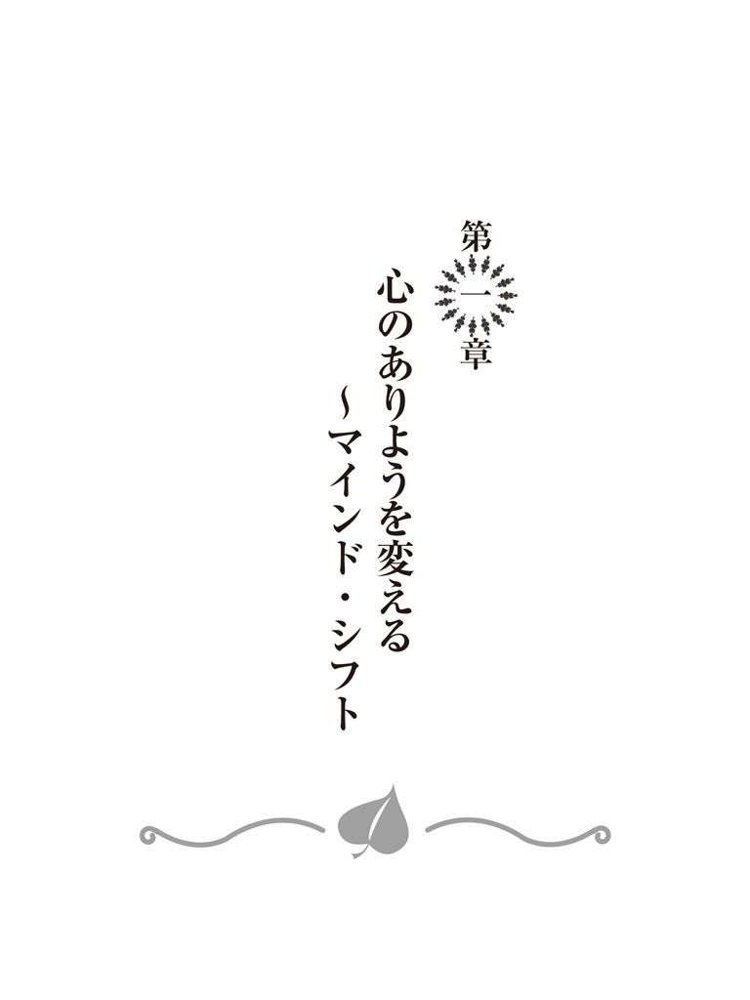
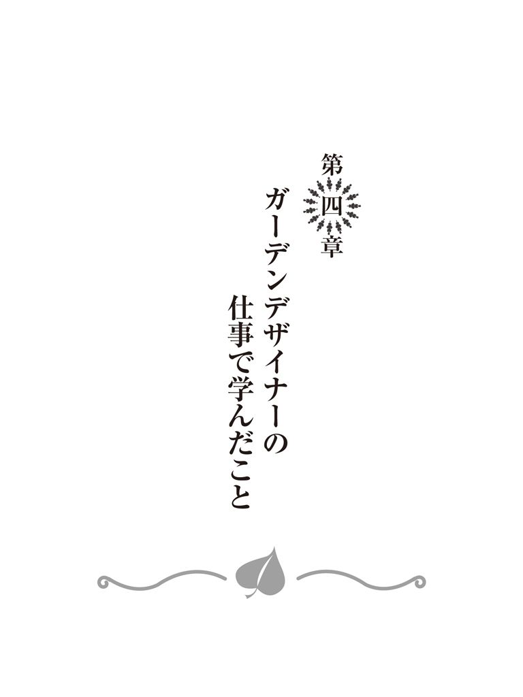

🏠
日
月
縦書き／横書き
 はじめに
はじめに
マインド・シフトについて
本当に今の自分でよいのか？
思いはあっても
スイッチを決めて毎日心を動かす
記録更新を習慣に
すべての人がサポーター
批判してくれてありがとう
深い意味のある存在
最初の一歩は小さく
書き出して整理する
変わりゆく時代を生き抜くために
あなたの心の色彩は？
人にもモノにも自分にも～「与える」その１～
与えているものが返ってくる～「与える」その２～
すべての人が先生
感情の連鎖 選ぶのはあなたです
苦労しなければ得るものはないのでしょうか？
イメージングで克服する
時間は作る
私たちは弱いもの
あなたという存在
目に見えないものは信じない？
何気ない日常にも、大切なことは隠れているかもしれない
生きていくうえで欠かせない「ビジュアル化」
誕生日と同じくらい当たり前
結果を一度捨てる
成功への方程式
一対その他大勢は大きなチャンス
常に一番を目指す意識
人生に分かれ道なし、人生は一本道
「幸運の女神には前髪しかない」のうそ
人生は限られた時間との闘い
これと信じた人についていく
学ぶ準備
「継続は力なり」は成功の鉄則
トイレ掃除で手に入れられるもの
感謝の気持ちを忘れない
会社はお金をもらって学べる学校である
心や頭を解きほぐし、柔軟性を持つことも必要
「引き寄せの法則」あらため「おにぎりの法則」
人生の小説
あきらめますか？
ありがたい存在
自分が試練を選択している？
潜在意識の本質
潜在意識と仲良くする
潜在意識はあなたの敵？ 味方？
散りばめられている記憶
潜在意識を散歩する
天使になる
「ながら思考」のすすめ
仮想と現実の区別ができない
未来を「実話」として
いつでもどこでも瞑想を
恐れることこそ
ファーストコンタクト＝一次面接
自分を偽らない素直力
大きい仕事は小さい姿でやってくる
勝手な思い込みは捨てよう
背中を押す気持ちがお客様を救うと考える
常にお客様のためにと考える
無欲の世界
鏡に向かって毎日特訓
心を込めて「贈り物」を用意する
とにかくイメージを喚起させる
心地良い近未来へ誘うプレゼン
頭の中はいつだってサクセス
結論クロージングの極意
逆境は成功に近づいている証
演じる
幸せは今にしかない
過程を生きぬく
潜在意識を味方につける
人を見極める
成功は普段の素行から
常に成功者としての振る舞いを
でも......
成功の次の成功を考える
人に教える
人を成功へ導く意識、教えることを常に考える
おわりに
| The Visionary Mind 克明なビジュアル化によって潜在意識があなたを成功へと導く | |
| 北村明彦 | |
はじめに
大学卒業後、私は友人の勧めでトヨタ系のディーラーに入社しました。やる気はありましたし、それなりの営業成績を収めてもいました。ですが、家族の希望もあり、この会社は二年半ほどで退社することになってしまいました。
その後は、お恥ずかしいことに「裏街道を生きるような人生も悪くないかな」などと浅はかな考えでいたのですが、またしても友人に強く勧められ、再び会社勤めをすることになり、幸いにも、まっとうな道に戻ることとなったのです。
はっきり言って、まったくやる気のない状況での再就職でした。にもかかわらず、なぜかその一方で、私は、「将来必ず役員になる」と心の中で決めていました。「決めていた」というよりも「それが当然のこととしか思えなかった」と言った方が正しいかもしれません。
そして、この「将来必ず役員になる」という確信にも近い思いは、結局、現実のものとなったのです。
これは私が20
代後半のことですから、今から30
年以上も前のお話です。
ナポレオン・ヒルの『思考は現実化する』（きこ書房）やロンダ・バーンの『ザ・シークレット』（角川書店）に巡り合うずっと前から、私はその内容を実践していたことになります。
さて、そこまではよかったのですが......私は、願望を現実化したことで安心してしまいました。「ここまで来ればもう安泰」と気持ちがゆるんでしまったのです。
体にも心にもムチ打ちながら、いつだって、自分の人生のビジュアル化だけは完璧に行なってきたのに、「必ず役員になる」という願望を現実化したあとの身の振り方を思考することを怠っていました。その結果、思い上がり、自分の力を過信し、結局、役員を辞任。27
年間勤めた会社を退職するという一大事に至ってしまったのです。
その後しばらくは、すべてを失ったような気持ちでした。
しかし、よくよく考えてみれば、会社を辞めたのは、かねてより温めていた「本を出したい」「ネットビジネスを極めたい」「教育セミナーをやりたい」という思いを実現するための運命だったのではないかと思うのです。
そして私は、怠っていた自分の人生のビジュアル化を再スタートしました。
お気づきでしょうか。早くも、「本を出したい」という願望はこうしてかなってしまっているのです。次に現実化するのは、「教育セミナーをやりたい」という願望でしょう。
私は、専務取締役という、企業の経営サイドに立った経験から、社員の質の向上ということを常に考えてきました。
会社が発展するためには、社員が幸せであること、社員が向上すること、そしてそのための教育が不可欠だというのが、これまでの会社員生活を通じて感じてきたことでした。
そして、劇的に好転するもの、あまり効果が感じられないもの、さまざまな社員教育プログラムを見るうちに、教育の内容もさることながら、教育を受ける社員のマインドがたいへん重要であることがわかってきました。まずは、教育を受けるマインドを作り上げておかなければ、どんな良い教育も効果がないのです。
私自身は会社で教育を受けたことはまったくなく、独自のマインドで願望を現実化しました。
再就職し27
年勤めた会社では、受注確率80
％の「ガーデンデザイナー」としての成功も収めましたが、これについての教育も受けていません。もともと職務としてやむなく始めたことでしたし、土の上を歩くことや虫が大嫌い、デザインやパースを描くのに必要な絵心はまったくなしという私の適性は限りなくゼロに近かったのです。ですが、独自の手法を見出し、実践していくうちに、最終的には受注確率80
％の「ガーデンデザイナー」へと大変身することができたのです。
自分自身のガーデンデザイナーの経験を考えれば「こんな私でもできたのだから、誰だって......」とも思いますが、現実には誰もが願望を達成できているわけではないということは言うまでもありません。やはり、絶対に教育が必要なのです。
本書では、私が成功と挫折の中で学び、実践してきた、人生を好転させる術、仕事がうまく回るようになる術をお教えします。これは企業で行なう社員教育を受ける以前に知っておくべき、人生や仕事に対する基本的な姿勢です。
最近、あれこれと手を出し、知識は増えても実際に行動は起こさない「ノウハウコレクター」が増えていると聞きます。これは、教育を受ける以前の「マインド・シフト」がなければ何にもならないということのあらわれなのではないでしょうか？
役員から無職へ、いわば天国から地獄へと撃沈した私ですが、今は強烈な「マインド・シフト」をして、電子書籍の出版、ネットビジネスの修得、セミナーの開催を志し、さらなる願望達成へ向けて邁進しています。
現在の私の肩書きは「フューチャー・ビジョナリスト（FUTURE-VISIONARIST）」。
「未来のビジョンを明確に持ち、その明確な未来をビジュアル化することで願望を達成する」方法をお教えし、私に関わるすべての人の笑顔を増やしていくのが私の仕事なのです。
「この本を読んだすべての人が、『マインド・シフト』を実践することによって、より輝く未来を手に入れて幸せになっている」という明確なビジョンを描きつつ、私の話を始めます。どうぞしばらくお付き合いください。
二〇一三年九月 北村明彦
The Visionary Mind
克明なビジュアル化によって潜在意識があなたを成功へと導く もくじ
第一章
心のありようを変える～マインド・シフト
◇
マインド・シフトについて
◇
本当に今の自分でよいのか？
◇
思いはあっても
◇
スイッチを決めて毎日心を動かす
◇
記録更新を習慣に
◇
すべての人がサポーター
◇
批判してくれてありがとう
◇
深い意味のある存在
◇
最初の一歩は小さく
◇
書き出して整理する
◇
変わりゆく時代を生き抜くために
◇
あなたの心の色彩は？
◇
人にもモノにも自分にも～「与える」その１～
◇
与えているものが返ってくる～「与える」その２～
◇
すべての人が先生
◇
感情の連鎖 選ぶのはあなたです
◇
苦労しなければ得るものはないのでしょうか？
◇
イメージングで克服する
◇
時間は作る
◇
私たちは弱いもの
◇
あなたという存在
◇
目に見えないものは信じない？
◇
何気ない日常にも、大切なことは隠れているかもしれない
第二章
私の成功哲学
◇
生きていくうえで欠かせない「ビジュアル化」
◇
誕生日と同じくらい当たり前
◇
結果を一度捨てる
◇
成功への方程式
◇
一対その他大勢は大きなチャンス
◇
常に一番を目指す意識
◇
人生に分かれ道なし、人生は一本道
◇
「幸運の女神には前髪しかない」のうそ
◇
人生は限られた時間との闘い
◇
これと信じた人についていく
◇
学ぶ準備
◇
「継続は力なり」は成功の鉄則
◇
トイレ掃除で手に入れられるもの
◇
感謝の気持ちを忘れない
◇
会社はお金をもらって学べる学校である
◇
心や頭を解きほぐし、柔軟性を持つことも必要
◇
「引き寄せの法則」あらため「おにぎりの法則」
◇
人生の小説
◇
あきらめますか？
◇
ありがたい存在
◇
自分が試練を選択している？
第三章
潜在意識を味方につける
◇
潜在意識の本質
◇
潜在意識と仲良くする
◇
潜在意識はあなたの敵？ 味方？
◇
散りばめられている記憶
◇
潜在意識を散歩する
◇
天使になる
◇
「ながら思考」のすすめ
◇
仮想と現実の区別ができない
◇
未来を「実話」として
◇
いつでもどこでも瞑想を
◇
恐れることこそ
第四章
ガーデンデザイナーの仕事で学んだこと
◇
ファーストコンタクト＝一次面接
◇
自分を偽らない素直力
◇
大きい仕事は小さい姿でやってくる
◇
勝手な思い込みは捨てよう
◇
背中を押す気持ちがお客様を救うと考える
◇
常にお客様のためにと考える
◇
無欲の世界
◇
鏡に向かって毎日特訓
◇
心を込めて「贈り物」を用意する
◇
とにかくイメージを喚起させる
◇
心地良い近未来へ誘うプレゼン
◇
頭の中はいつだってサクセス
◇
結論クロージングの極意
第五章
成功を掴み取るために
◇
逆境は成功に近づいている証
◇
演じる
◇
幸せは今にしかない
◇
過程を生きぬく
◇
潜在意識を味方につける
◇
人を見極める
◇
成功は普段の素行から
◇
常に成功者としての振る舞いを
◇
でも......
◇
成功の次の成功を考える
◇
人に教える
◇
人を成功へ導く意識、教えることを常に考える

マインド・シフトについて
マインド・シフトとは気持ちを変えることです。
一番大切なのは、過去の出来事をどのようにとらえるかということです。
誰にでもつらい過去の経験や幸せな時期があり、今の環境や心の状態があります。
過去のつらい経験は人生の教訓とし、幸せな経験は未来の目標や思い描く未来の結果への糧にすれば、すべての経験が役に立ちます。
過去のつらい経験はあまり思い出したくないに違いありませんが、そのつらい過去があったからこそ、今があり、その経験こそが成功や幸せに導いてくれる物語の始まりなのです。過去の出来事を変えることはできませんが、ハッピーエンドの物語のプロローグとして考えれば、しっかり受け止めることができますし、これから紡がれる成功物語の大切な一部となります。
ですから、過去のつらい経験を生かし、感じ方を変えるのです。
今現在、とてもつらい状況にあるのであれば、これから成功や幸せの物語が始まると考えてください。今まさにその渦中にあるという場合、つらいマインドから脱出するのは難しいと感じてしまうかもしれません。私もすべてを失ったようで、半年以上苦しんだことがあります。高いビルを見上げ、あそこから......と恐ろしい想像をしたこともありました。でも、半年も経ったころでしょうか、新たな気持ちが芽生え始めたのです。「ここはもう自分のいるステージではない」という思いがどこからか湧き上がってきて、新たなる道を踏み出す決心ができました。
・自分の思考や行動を変えることで状況は必ず好転していく
・自分のとらえかた次第で状況はまったく違うものになる
・つらさが永遠に続くことはない
簡単ではないかもしれませんが、日々の考え方や行動によって必ず気持ちは変わります。人生は一度きり、大切な時間は容赦なく過ぎ去っていきます。今がどんなにつらい状況でも、周囲の人に愛や感謝の気持ちは与えられますし、笑顔で接することもできるはずです。もっともっとつらい思いをしている人だってたくさんいます。
まずは、
・先に他人に与える
・与えることができる心を持つ
というマインド・シフトにチャレンジしましょう。
与えたことで返ってくる愛や感謝、笑顔などがあなたの心を癒し、励ましてくれることになるはずです。
広い世界には、あなたよりよっぽどつらく苛酷な環境にあっても笑顔で過ごしている人もいますし、とても笑顔になどなれない環境で過ごすことを余儀なくされている人もたくさんいるのです。今、あなた自身が幸せであっても、またはつらくても、まずは人に「与える」ことに挑戦しましょう。愛、感謝と笑顔、本当に小さなことでいいのです。これができれば心を完全に変えることができるのです。
まずは愛と感謝と笑顔から始めましょう。
本当に今の自分でよいのか？
これはとても悩ましい質問です。
人間関係、労働時間、給与など、不満を挙げればキリがありませんし、誰だって、何かしら不満を抱きながら生活しているものですが、その不満を改善し、乗り越えようとしている人はどれくらいいるでしょうか。
実は、それらすべてを選択しているのは自分自身だということに気づいてください。市場、環境、会社、上司などあなたを取り巻く要素が悪いというわけでは決してないのです。
不平不満を口にすることは簡単ですし、皆で同調するのも容易なことかもしれません。けれども、皆で愚痴を言い合っているだけでは、気は楽になるかも知れませんが、何年経っても何も変わりません。ただ愚痴をこぼし合い、傷をなめ合うだけの仲間と一緒にいても、あなたにとっていいことは何もありません。そんな集団からは一刻も早く離れることです。
仕事とは、食べていくためのものですが、自分の夢をかなえる手段にもなりうるものです。我慢することは大切ですが、あまりにも不平不満が多いようであれば、根本的に仕事について考え直す必要があるかもしれません。一度だけの大切な人生ですから、将来のことを常に念頭に置き、不平不満だらけの環境からは脱却することも大切です。
不平不満ばかり言っているあなたは美しいですか？ 潔く、凛々しく生きましょう。
今の仕事を続けるべきか否か。一度、真剣に、今の会社や環境の中での自分の将来性や会社自体の将来性も考えてみましょう。
思いはあっても
感じ方は人によって違うかもしれませんが、一秒、一分、一時間、一日......時間は同じ速度で、確実に過ぎ去っていきます。
会社の中で昇進したい、他の仕事を探したい、独立したいなど、何か「思い」があるのならば、その「思い」を早く明確にするべきです。二年、三年、五年と過ぎ去ってしまう前に、早く決断をして、その「思い」に向けての行動を始めましょう。決して先送りにしないこと。三年後にやっと重い腰を上げて行動を始めたとしても、そこからまた悩み始めれば、十年なんてあっという間に過ぎてしまいます。
昨日、今日、明日と、短いスパンでは大きな違いを感じることができないかもしれませんが、一週間、一ヶ月、一年と積み重ねていくうちに、僅かな時間や知識の積み重ねが、まったく違う結果を導くことに必ず気づきます。
自分で選択するのです。
この十分間をどう過ごすか、今日からの十日間をどの様な時の流れとするのか？
決して戻らない、時間の大切さについて考えてみましょう。
そして行動を始めるのです。
スイッチを決めて毎日心を動かす
「これ」という思いがあるのならば、そのことを毎日思い続けるようにしましょう。すると、その「思い」は潜在意識にしっかり刻み込まれ、いつしかごく当たり前のことになるのです。
私は、「必ず役員になる」「いつも素敵な笑顔で」「必ず一番になる」という三つの言葉を常に自分に言い聞かせていました。
「思い続ける」のは簡単なことではありませんから、まずは、何かスイッチのようなものを決めて、「思い続ける」手立てを確立しましょう。
私自身実践してきたやり方で、おすすめなのは、何かの習慣に絡める方法です。歯を磨く、食事をする、寝る、起きるなど毎日のルーティーンの前後に、自分の大切な思いを心の中で唱えると決め、必ず実行するようにするのです。
洗面台の前で歯ブラシを動かしている間ずっと唱え続けてもよいですし、「いただきます」や「ごちそうさま」とセットにして心の中で唱えることにすれば１日に最低でも６回は意識することができます。「おやすみなさい」とセットにして眠りに入るまで唱え続けるというやり方でもよいでしょう。
潜在意識に刻み込むように、繰り返し言い聞かせるのがコツです。
（その「思い」が現実のものになると、どの様な良いことがあるのかということも加えるといっそう刻み込みやすくなるのですが、それはまた、別の章でお話しします）
毎朝、その日一日の行動について、意識しようと思うことを唱えるのも大切なことです。
たとえば「今日は一日笑顔で過ごす」と自分に言い聞かせることで、あなたも、そして周りの人たちも健やかな一日が過ごせることになりますし、日々の積み重ねで、人生は好転していきます。
以前はそうは思えなかったことでも、続けていくうちに、呼吸をするように自然にできるようになっていることに気づくことでしょう。
すべては「思考する」ことから始まり、「すべては思考することから始まる」と意識して思い続けることで、しっかりとした行動が取れるようになるのです。
思考とその思考に沿った行動がごく当たり前という領域に達したとき、あなたの思考は現実化し始めます。
まずは今日一日だけでも結構です。思ってみましょう。
記録更新を習慣に
来る日も来る日も何気なく一日が終わってしまい、「今日もよく働いた」という思いだけしか残らないということが、もう何年も続いていませんか。
「今日もよく働いた」と思えるのは、とても素晴らしいことです。けれども、ただ同じことを繰り返しているだけでは、一年経っても、二年経っても、能力に変化がないということにもなりかねませんし、何年経ってもお給料が変わらないということにもなってしまいます。
そんな事態を避けるためにも、どんな小さなことでも構いませんから、自分自身を成長させることに挑んでみましょう。毎日自分の新記録を目指すのです。
「時間を短縮する」「ある分野の知識を深く掘り下げる」「仕事の精度を上げることに集中する」などなど、昨日よりも今日、今日よりも明日と、自分を成長させていくのです。一年続ければ、技量はアップし、知識量も相当なものになっているはずです。
成功するためには、自分と戦うことは避けて通れませんし、大きな目標を達成するためには、毎日、毎週の小さな達成、成功の積み重ねが大切なのです。
あなたを取り巻く人々のレベルに左右されてはいけません。周りがどうであれ、まずは自分自身のことに集中し、自分を律することで自分の知識や能力の向上を図ることです。
毎日、毎週、毎月、自分自身の新記録を作っていきましょう。
常に新しい自分であり続ける努力を怠らないことです。
すべての人がサポーター
自分には理解できないこと、想像もつかないことに対して、多くの人は感心すら抱かず、頭から否定してかかるものです。
会社に勤めていたころの私は、人から理解してもらえない発言、発案を繰り返してきました。一見「？」と思えるアイデアの奥底に潜んでいる必要性は、なかなか理解してもらうことができません。それでも、ものごとが動き始め、実体が見えるようになってくると、みんな、まるで何ごともなかったように、従うようになるものです。
私は、常に「何でそんなことをする必要があるのか」と責められ、孤立無援の逆境に身を置きながらも、その状況をひっくり返し、事態を動かして、さまざまなことを実現してきました。
あなたが大きな計画や夢を語るとき、周囲の人たちは何と言うでしょうか。おそらく「君には無理だ」「何でそんなことをする必要があるのか」と否定的な意見が大半を占めることでしょう。それは、居心地の良いぬるま湯的な現状に変革がもたらされることへの恐れ、人とは違う発想に恵まれたあなたが別の次元の世界へ行ってしまうことへの嫉妬心のあらわれにほかなりません。
ときには、あなたを応援し、背中を押してくれる人も現れますが、味方であるように見せかけて、実は陰で足を引っ張っているということもあります（いつでも、その真意がどこにあるのかしっかり見極めることが大切です）。
とは言え、忘れないでください。陰で足を引っ張っている人も、実は、あなたに幸運をもたらす天使となりうるのです。
成功する人は、周囲からの否定的な意見をも目標達成に向けての糧に変え、進んで行くものです。本当に自分がやりたいことを実現するためには、「一対その他大勢」の状況に臆することなく、ネガティブな攻撃の嵐のパワーもあなたの推進力に変えて動き始めましょう。否定的な人たちだって、あなたにパワーをくれるサポーターなのですから。
あなたを意識すればこその否定的な意見や態度は、あなたに対するちょっとひねくれた拍手喝采。「応援ありがとうございます」と感謝しておけばいいのです。
批判してくれてありがとう
言動が批判されたとき、あなたはどの様に反応しますか？
批判されたときに、怒ったり、あとでストレスになるような受け止め方をするのはやめましょう。
「批判してくださいまして、ありがとうございます」と考えればよいのです。批判される内容がどのようなものであっても、あなたがどう受け止めるかが大切です。
何をするにも賛成と反対は存在しますし、相手はあなたの考えを批判しているのであって、あなたという人格を否定しているわけではありません。批判されたことに対して、怒りやストレスを感じてしまうと、心だけでなく健康にも影響が出てしまいますから注意が必要です。
批判とは一つの意見であり、意見してもらえるということは、とてもありがたいことなのです。「貴重な見解をくださり、本当にありがとうございます」とお礼を言えるくらいの心のゆとりを持ってみましょう。
何かが心の中に入ってきたとき、あなたは感情を自由に選択できます。
批判を怒りやストレスにしてしまうのか、貴重な意見をもらえて、なんてありがたいことなのだろうという心からの感謝にするのか。これは、健やかに暮らすのか、ストレスを抱え不健康に過ごすのかという選択でもあるのです。
日々、選択することは山ほどあります。感謝を選択することを繰り返すことで、あなたの気持ちは見違えるほど好転していきます。常に感謝を選択していれば、周囲の人はあなたのことを「なんて心の広い人なのだろう」「とても素敵な人だな」と思うようになるでしょう。
あなたが抱いた感情が、周りの人たちに良くも悪くも影響を与えることは意識しなければならないところです。
「批判してくださいまして、本当にありがとうございます。感謝いたします。今日も良い教訓をありがとうございます」ということですね。
深い意味のある存在
あなたは「苦手だ」「嫌いだ」と思っていても、相手はあなたのことを必要だと考えているかもしれませんし、逆パターンの可能性もあります。
「出会う人はすべて自分の人生にとって、深い意味がある存在である」と考えましょう。出会った人はあなたにとって、先生かもしれないし、生徒になるかもしれない、もしかしたら将来良き友人になる可能性だってあるのです。考えを少し変えるだけで、人付き合いも変わってくるものです。今までとはまったく違った人脈ができるかもしれませんし、人生がより面白くなること間違いなしです。
人との出会いを楽しみましょう。
最初の一歩は小さく
「思い」を実現するための具体的な行動を始めていますか？ もし、まだ始めることができずにいるのなら、初めの一歩は「一気に大きく」ではなく「さりげなく小さく」踏み出しましょう。いきなり大きくと考えると心は構えてしまいますから、軽く踏み出せるような、小さな第一歩から始めるのがうまくいく秘訣です。
最初から気合を入れて力んでみても、願望はすぐにかなうわけではありませんし、最初の一歩が踏み出せずにぐずぐずしていれば、苛酷にも時は過ぎていってしまいますから注意が必要です。
さりげなく、小さな初めの一歩のその後も、コツコツと小さな一歩を重ねていきましょう。
人が見ていても、見ていなくても、毎日毎日しっかり知識を身に付ける、「この人だ」と思った人の言うことを真面目にやってみる、誰かのためになる行ないを続ける......。
家族が、会社の上司が、世間が、あなたの愚直なまでの努力や、人知れず行なってきた善行を認めるのは、一ヶ月後かもしれませんし、一年後かもしれません。もしかしたらいつまで経っても誰にも気づいてもらえないかもしれませんが、毎日、毎日積み重ねることが肝心なのです。
今日から毎日、「小さな一歩」「コツコツ」という言葉を必ず思い出して、唱えてみてください。
書き出して整理する
自分はこれから何をやりたいのか、どのように夢を実現するのか......、頭の中であれこれと考えてみてもなかなかまとまりません。人間の脳にはスーパーコンピュータ並みの能力があるとはいえ、頭の中だけで体系化して考えることはとても難しいことなのです。
まずは自分の強み、今の自分に不足しているところなどから始めて、書き出して整理する習慣を身に付けましょう。
書き出してみると、直すべきところがはっきりしますし、今まで気がつくことができなかったことが見えてくるはずです。
何よりも書き出しておけば忘れることがありません。
思いついたことや「こうしよう」と思ったことなどは、日付を入れてメモしておくことです。せっかく良いことを思いついたのに思い出せない......、そんなもったいないことは絶対に避けなくてはなりません。
願望達成や夢をかなえた過程を記録しておけば、その貴重なサクセスストーリーを人に教えるときにもスムーズです。自分にとっては何気ないことでも、人様のお役に立つということもたくさんあるのですから。私も、書き記しておいたものを大いに活用して、こうして本を書いているわけです。
ただ、いろいろなところにメモしてしまうと、どこに書いたか分からなくなってしまいますから、毎日必ず書くわけではなくても、日記のように、必ず順を追って見られるような一冊の手帳かノートへ日付順に書くようにしましょう。思いついたことやひらめいたことなどをいつでもどこでもすぐに書き込める、小さめのノートを携帯用として用意しておけば完璧です。車の運転中や移動中は、携帯用ノートにメモすればいいわけです。
ノートを読み返すことによって、アイデアとアイデアが結び付き、進化することもありますから、あなたのアイデアやメモが蓄積されたノートはやがて、あなたにとってかけがえのない宝物となります。
『メモがあなたを成功へ導く』と言っても過言ではありません。
変わりゆく時代を生き抜くために
日本の社会はこれから大きく様変わりしていくでしょう。
・雇用を巡る状況は不安定
・年金はあてにできない
・65
歳までの雇用延長が義務化されたが、このために若年層の雇用にしわ寄せがくる可能性が大
給料や年金だけに頼るのではなく、他に稼ぐ手立てを身に付けておかなくては生き抜いていけない時代に突入しています。
あなたが望むことの実現可能性はどのくらいなのか？
今あなたが身を置いているところは、あなたの夢をかなえるためのフィールドとしてふさわしいのか？
今現在の安心・安全な境遇に満足して終わるのか、将来の夢の生活を望むのか？
何かにチャレンジするのに年齢は関係ありません。何歳であっても、人生はこれからなのです。
しっかりと時間をかけて、将来を俯瞰して見ましょう。
あなたの心の色彩は？
何をするにも、あなた自身の心のあり方次第です。変化や結果を外に求め、あれこれ操作しようとするのではなく、まずは自分自身の心を整えましょう。あなたを磨き高めてくれるのは、外のものではありません。すべての答えはあなたの中にあるのです。内なる自分を探求してみれば、広大な宇宙さえも、あなたの心の中にあるということに気づくでしょう。
あなたの考え方次第で、心は、ばら色にも、虹色にも、セピア色にもなります。寛大な心にも、優しい心にもなれます。あなた次第でどんな色にもなりうるのです。
あなたは心をどの様な色に染め上げたいですか？
人にもモノにも自分にも～「与える」その１～
何かを人に「与える」。簡単そうでいて、なかなか難しいことです。
ビジネスでも日々の生活の中でも、ちょっと気を遣えば与えられることがたくさんあるはずなのに、結局何一つ人に与えることのないままやり過ごしてしまうことが多いではないでしょうか。そんなたいそうなものを与えようと思わなくてもいいのです。
・元気で明るい朝の挨拶
・声を掛けられたときの明るい笑顔での返事
・はきはきと明るい電話の対応
こういった些細な心遣いによって、相手に平穏な心で過ごす一日を「与える」ことができるかもしれません。
何でもいいのです。いくらでも与えられることはあります。咲いている花に「綺麗に咲いてくれてありがとう」、これも感謝の気持ちを「与えている」ことになります。植物やモノに感情はないかもしれませんが、そんな感情を持たないモノにも感情を与えうるかもしれない、それはあなた次第なのです。
人やモノに「与える」には、まず自分自身が健やかであることです。健やかでいられるために、自分の心にも「与える」よう心掛けましょう。
与えているものが返ってくる～「与える」その２～
誰かを戒めるとき、相手のことを慈しみ、本当に分かってほしくて言っている場合と、相手のことが嫌いで、憎しみとして伝えている場合があります。
同じ言葉を発していても、相手に「与えている」ものが一方は「愛」であり、一方は「憎しみ」なのですから、正反対ですね。
「与えたものが返ってくる」というのが人生の法則です。「愛」を与えれば「愛」を伴ったものが戻ってくるし、「憎しみ」を与えれば「憎しみ」を伴ったものが返ってくるのです。
部下を戒めるとき、本当に可愛い部下であれば戒めの言葉とともに、いつかはこの法則を教えてあげてください。この人生の法則はあなたの愛する部下にも幸運をもたらし、継承され良い循環をしていくことになるでしょう。
どうしても好きになれない部下であっても、「好きではないけれど、やはり良くなってほしいから」と悪意を取り除く努力をしなければなりません。
人生が上手くいかないと感じている場合、憎しみや敵意が循環してしまっているのかもしれません。思い当たることはありませんか？ 今すぐそれらの感情を捨て、愛と感謝の気持ちに変換してください。良いことが続く、悪いことが続くということは、あなた自身が他者に与えた感情の反映ですから、すべてあなたサイドの問題としてとらえることが肝心です。
問題は「言葉」ではなく、その時心に抱えている「感情」です。言葉を通じて相手に与えるのは感情ですから、常に愛、感謝や慈しみを込めて言葉を発することが大切なのです。
自分が相手に何を「与える」のかを意識することを常に忘れないでください。
人生は「法則」にのっとって動いているのだ、ということを知りましょう。
すべての人が先生
すべての対人関係において、相手のことを好きとしか思えないとしたらどうでしょうか？
相手がどの様な考えや態度であっても、あなたが相手に対して好意を持って接すれば、関係は良好になります。相手を変えようとするのではなく、自分が変わる。変わるというよりも、常にそうあることを心掛けるようにしましょう。常に相手に「愛と感謝」の念を持って接するのです。これはとても難しいことかもしれません。ですが、心掛けることによって、あなたの心がとても楽になっていきます。私はこの考えを五年ほど意識して続けていますが、以前よりかなり心が楽になっています。相手がどのような人であっても、その人はあなたの人生に必要不可欠な教育係、先生なのです。「教えてくださり、ありがとうございます」と心の中で感謝しましょう。
好感を持てない相手に敵意を表すか、教えに対して感謝をするか、どちらを選択しますか？ 「人生の法則」を思い出してください。この選択によって、あなたに返ってくることも決まりますのでご注意を。
クレームや文句を言ってくれる人は、さらに素晴らしい先生です。言いにくいことをわざわざ時間を取って言ってくれて、さらにあなたを改善してくれようとしてくれるのです。何てありがたいことなのでしょう。
すべての人を好きとしか思えないあなたでいると、心がとても楽になります。
感情の連鎖 選ぶのはあなたです
人や出来事に対して、どうしても嫌悪感を抑えることができないということがあるものです。そんなとき、怒りをあらわにした言動に出る人と、それでも愛と感謝の気持ちで接する人とでは、大きな差が生じてしまいます。
抱いた感情は連鎖し、周りの人たちにも影響を及ぼします。あらわにした怒りは、相手に連鎖するのです。あなたが朝から怒れば、あなたのせいで相手はその日一日、不快な思いで過ごすことになるかもしれませんし、夜、あなたが怒れば、相手はイライラして眠れぬ夜を過ごし、翌日は寝不足で冴えない一日を送ることにもなるかもしれないのです。
さらに、「あなた＝怒りをあらわにする」というイメージは、周囲の人たちの潜在意識にしっかりと刻み込まれ、「あなた＝怒りっぽい人」という人格が、他の人たちの中に形成されてしまうのです。
怒ることが多かった私ですが、感情の連鎖やそれが及ぼす重大な影響に気がついてからは、ほとんど怒りをあらわにすることはなくなりました。「怒りをあらわにする」ことというよりも「怒ること」自体がなくなったと言ってよいでしょう。自分自身が変化し、さまざまな経験を検証するうちに、「人生の法則」に到達することができたのです。
あなたの爽やかな笑顔で、周りの人の一日を明るく清々しいものにできるのです。あなたも笑顔、周りの人たちも笑顔で、みんな健やか。こんなに素晴らしいことはありませんよね。なんであれ、与えたものは巡って自分に返ってきます。「愛と感謝と笑顔」の連鎖、「怒り」の連鎖、どちらを選択するのでしょうか。
自分の言動が導く結果を、人は認識しているものです。
今ここでがんばらなければ、自分の願う結果を手にできないということ、今これを言えばあの人を傷つけてしまうということ、ここで怒りをぶつければさらに状況が悪くなってしまうということ、自分が立ち去れば相手を困らせるということ、ありがとうと素直に言うことができれば仲直りができるということ......。
心を静めて、平和な気持ちでいることができれば、本来自分が望む結果はやがて訪れます。目の前に現れる事象に対して、衝動的、短絡的に反応するのではなく、一呼吸入れて「間」をおき、あなたが本当に心の底から望んでいる結果を思い出してください。
人間関係においては、この一呼吸、「間」が大切なのです。短絡的な怒りは抑え、健やかに生きましょう。
苦労しなければ得るものはないのでしょうか？
考え方次第で、ものごとは大きく変わります。私は、「苦労なくして得るものなし」と考えてしまうと、同じ結果を求めていても到達率はかなり下がってしまうと思っています。
「苦労は必要」と考えれば、苦労を引き寄せます。嫌々やっていると、さらに嫌なことを引き寄せます。逆に「楽しくなければ」と考えれば、「楽しくできる過程と結果」を引き寄せることができるのです。ですから発想の転換、マインド・シフトが必要なのです。
どんなに大変なことであっても、どれだけ難しい難関を突破しようとしているにしても、自分で「やる」と決心したからには、まずは、自分の心を調整することが大切です。楽しくラクにやれるように、徹底的に潜在意識に刷り込むようにするのです。
・苦しげに、いかにもつらそうにやっている自分の姿
・楽しそうに颯爽と凛々しくやっている自分の姿
あなたはどちらをイメージしますか？
そして周りの人は、どちらのあなたを応援してくれるでしょうか？
いつだって「颯爽と凛々しい自分」をイメージしていきましょう。
イメージングで克服する
イメージングは、医療やスポーツにも取り入れられています。
難病を患う子どもに「戦闘機に乗って、体の中にいる悪い病原菌を撃ち落とす」という、体の中で戦うミクロの決死隊のようなイメージを与え続け、実際そのように思い続けたことで、現代医療では治療できない病気が完治したという例を聞いたことがあります。
スポーツでは、イメージングで苦手なことを克服し、いつも二位もしくは三位止まりだった選手が、一位を取ることができるようになったという例がありました。
私も一つだけ実践して、効果を出したことがあります。私は以前からひどい花粉症で、毎年かなり苦しんでいました（花粉症でなければ、もっと頭が良かったと思うのですが......）。イメージングの成功例を聞いた私は、自分なりにやってみることにしました。花粉症は、体が異物として捉えた花粉を外に排出しようとして起こるので、花粉をビタミンＣとイメージすることで克服しようと考えたのです。最初はとてもツラかったのですが、ビタミンＣは体にいいのだと自分に言い聞かせながら、毎日手を広げて大きく息を吸い続けた結果、何年もの間苦しんできた花粉症が、数週間で本当に治ってしまいました。そして今も、花粉症の症状は出ていません。
何に対しても、イメージをするということは大切なことです。
ただし、イメージしたことを崩すようなことが生じた場合、極端にそのイメージに固執すると瞬時に対応ができなくなりますから、柔軟性も併せ持つことが大切です。
時間は作る
「これだ、これをやってみよう。分かった」と決めても、一歩踏み出すまでに時間がかかるうえ、踏み出してしまうと今度はそのことだけで満足してしまい、また無為に時間が経ってしまう......、そんなことはありませんか？ 集中とスピードが必要なのは分かっているつもりでも、「難しい」「分からない」「明日にしよう」そんな調子で時間がどんどん過ぎていってしまいます。
学生時代のように、一週間の時間割りを作り、やりたいことを必ず実行するようにしましょう。限られた時間を有効に使うために、テレビの時間は削ります。テレビを観るのは一日に一時間程度で十分です。時間は作り出すものです。たとえ予定していたことを終わらせることができなかったとしても、「決めた時間に取り組む習慣」を身に付けることが肝心なのです。自己管理こそが願望達成への第一歩。時間を作るということは、無駄をなくすことです。どんなに忙しくても、時間を作ることにチャレンジしてみましょう。
自戒の意味も込めて......何かを成し遂げたいと思っていても、のんびりしていると、大切な時間はどんどん過去へと過ぎ去っていってしまいますから気をつけましょうね。
私たちは弱いもの
人間とは弱い存在です。哺乳類という動物として太古の昔から培ってきた「逃走本能」や「防衛本能」にはあらがえないのか、強くなろうと思っても、人間、なかなか強い意志、強い心は持てないものなのです。大方の人にとって、強くなろうとすることには無理があるのかもしれません。「強くなろう」というのは、本来ＤＮＡに刻まれた「逃走本能」に逆らう行為であり、「強くなる」ということに関しては、人類のＤＮＡの進化を待つくらいの長いスパンで考えるべきことなのかもしれません。
まずは自分の弱さを認めることから始めましょう。弱いのはあなたが悪いのではなく、ＤＮＡレベルの問題なのですから。どうですか？ そう考えれば少し気が楽になりませんか？
弱さを認めたならば、次は、力んで無理に一歩踏み出すのではなく、普段歩いているのと同じ感覚で、ごく自然に右足を出したら、次は左足、また右足......という風に歩を進めていけばよいのです。普段歩くときに、「何か指令を出さなければ......」などと考えたりはしませんよね。
歩き出してからも、誰かの力を借りてかまいません。所詮、人間は弱いのですから。気負わず歩いていれば、宇宙も見守り、手助けをしてくれることでしょう。
自分の弱いところを認め、肩の力を抜きましょう。
あなたという存在
ご先祖さまから脈々と引き継がれてきた英知をまとった後継者、それがあなたという存在です。とても、とてもありがたく、本当に尊い存在です。四十代遡ればご先祖様の数は一兆人を超える計算になりますから、引き継いでいる英知は計り知れません。心の奥底にしまいこまれている引き継がれた記憶を是非一度辿ってみてください。あなた自身も気がついていない、「あなた自身」が心の中に、まだ、たくさん隠されていることでしょう。
あなただからできること、あなたにしかできないことがもっとたくさんあるはずなのです。今の自分でよかったと思える、もっとあなたらしいことが、見つかるかもしれません。
あなたがあなたである理由を、深く考えてみましょう。途切れることなく脈々と引き継がれてきた、幾多の偶然や幸運のおかげで、あなたは存在しているのです。
目に見えないものは信じない？
目に見えないものは信じないという人もたくさんいますが、私は目に見えないものも信じています。
いつも天使が手助けしてくれている、ご先祖様が見守ってくれていると思うことができれば、ちょっと気持ちが楽になりませんか？ 実力が発揮しやすくなったり、自信が強まったりするということもあるでしょう。これまで上手くいったことも、実は天使たちやご先祖様の力添えがあったのかもしれません。目に見えない偉大な力の存在は、否定できないのではないでしょうか。
目には見えない存在が力を貸してくれます。信じて、一歩踏み出しましょう。
何気ない日常にも、大切なことは隠れているかもしれない
世の中には、常に新しい情報が満ち溢れています。それらの情報は気になりますし、求めたくもなります。新しい情報に敏感であることはとても大切なことですし、新しく得た情報によって人との出会いがもたらされることも多いでしょう。
ですが......日々、何気なく過ぎていく日常、いつもの光景、いつもの顔ぶれ、当たり前のようにいつも誰かにしてもらっていること、そんな中にも気がつかなくてはならない、とても大切なことが隠されているかもしれません。もっと感謝してもいいことがあるかもしれません。とても大きなチャンスが隠されているかもしれません。気がつけば心の底から感謝できること、あなたのさらなる飛躍につながることが見つかるかもしれません。
見方をちょっと変えてみましょう。耳を澄まし、心を澄ましてみてください。きっと何か気づきがあるはずです。
「灯台もと暗し」という言葉があります。先人たちの言葉から学ぶことはたくさんあるのです。
生きていくうえで欠かせない「ビジュアル化」
「はじめに」でもお話ししたとおり、私は二十代のころから人生のビジュアル化を実践していました。
ガーデンデザイナーをしていたときは、「その仕事を受注できた」という自分自身の未来をビジュアル化するだけでなく、お客様にも完成したお庭や外構で過ごす近未来をビジュアル化していただけるような工夫をしていました。物語を付加し、イメージをかきたてる比喩を多く使ってガーデンプランをお話しすれば、お客様にもいろいろな形で未来を見ていただくことができ、あたかもそこで過ごしているような感覚を持っていただくことができるのです。お客様に喜んでいただきながら受注確率も上がるという、お互い幸せになれる成果を上げていたのです。
また、ガーデンデザイナーの仕事に関してだけでなく、営業や支店のあり方を考えるうえでも、小さい単位でのビジュアル化をしていました。小さなビジュアル化を習慣にすることで、先を読む力が付きましたし、小さなビジュアル化の積み重ねが連鎖して実績となっていったのです。
私が生きていくうえで、ビジュアル化はなくてはならないものなのです。
「明確で、詳細に思い描いたまだ見ぬ未来へ行き、思い描いたことを既成事実として潜在意識に認識させたのち、現在に舞い戻り、その確定された未来へ再び戻る」これが私の考えるビジュアル化です。
これまでビジュアル化を実践してきて、その素晴らしさは、「未来の結果が分かっているがゆえに、過程において何が起こっても適切な対処ができ、逆境をも乗り越えることができる」という点だと感じています。
何か不測の事態が起こったとしても、未来の結果を想起することで、「ここでこのように対処すれば大丈夫」「ここを見逃してはいけない」と瞬時に適切な行動を取ることができるのです。
長いスパンのビジュアル化の中には小さなビジュアル化がたくさんあり、大きなビジュアル化が達成される前に、次の大きなビジュアル化を用意しておくことで、絶え間ない達成が積み重なっていきます。ビジュアル化を常に並列的に連動させることで、二手三手先を見通すことができます。他の人には見えない先が分かるようになるのです。
「大きなビジュアル化の中で、小さなビジュアル化を連動させる」これが願望を達成する秘訣です。
誕生日と同じくらい当たり前
ビジュアル化においては、「達成できる」ではなく「達成できた」と考えることが肝心です。「達成できてよかった」と感情をからめるのもよいでしょう。
ここまではよく言われていることなのだと思いますが、私は、もうワンランク上のビジュアル化を実践しています。
私がこのまま元気でいれば、十年後の誕生日は当たり前のようにやってきます。そのくらい当たり前のこととして、私は二十代前半から『思考は現実化する』（きこ書房）や『ザ・シークレット』（角川書店）といった本の内容を実践していました。これらの本がブレイクするのは、だいぶ後のお話です。大学卒業後に入社した会社では、やる気はあったものの家庭の事情で成し遂げることはできませんでしたが、二社目の会社（最盛期で年商七十億くらいの企業です）では「役員になる、専務取締役になる」という願望を達成しました。私にとって願望達成までの過程において「昇進して支店長になること」は「五年後、十年後の誕生日が来る」のと同じ「当たり前」レベルのことだったのです。
願望達成の過程においてはさまざまな逆境に身を置くこととなりますが、それも誕生日と同じ「当たり前」レベルのことなのです。私自身、こうして皆さんにお話ししながらも、落ち込むこともありますし、イライラすることもあります。ですがこれも、過程のことと捉えています。
願望や夢をかなえるには、「当たり前」もしくは「当たり前を超えた」意識を持ってください。必然さえも超えた意識といってもよいでしょう。
特別力む必要はありません。生きていれば必ず誕生日は訪れるのですから。
当然の意識を遥かに超えるのです。
結果を一度捨てる
思い描いた願望を達成するために、まずはしっかりと書き出してみましょう。願望を細分化して考えるのです。
大きな項目、次に中項目、小項目といった具合に細分化していきます。そして中項目の中で行動に必要な要素を書き出します。これでひとつの願望の詳細が見えてきます。
願望を達成するためには、その結果を鮮明に、そして詳細に思い描けなくてはなりません。書き出すことによって達成に必要な行動や情報、物や人物が明確になります。これで成功指示書ができました。あとはこの指示書どおりに行動していけばよいのですが......、ビジュアル化した未来と現在のあなたの姿には、大きなギャップが存在していることでしょう。
このギャップに苦しまないためにも、達成するという結果のことは一度忘れるようにしてください。もうすでに行き場所は分かっているのですから、指示書に従い、目の前の一歩一歩に集中すればよいのです。
願望達成の過程にはさまざまな壁や難題があらわれますが、それらを解決することで成長することができます。ですから、過程を大切にしましょう。多くの人が難題を解決できずにあきらめてしまうのは、先を見過ぎてギャップに翻弄され不安になってしまうからです。願望達成や成功を阻むのは、あなたの心なのです。
結果のことはひとまず忘れましょう。無用な不安は抱かず、「過程」に集中するのです。
成功への方程式
実績を上げ昇進していくには、当然、自分なりに努力をしていかなくてはなりませんが、ここで肝心なのは誰があなたを引き上げ、押し上げてくれるかということです。たとえあなたが直属の上司のことを嫌いで尊敬できなかったとしても、その上司の力添えがなければ昇進ができないということもあるのです。与えたものが必ず返ってくるという「人生の法則」を思い出してください。あなたが上司に抱いている感情が、あなたにも返ってくるのです。あなたが上司のことを好きでないのであれば、すぐにでも、その思いから改善しましょう。あなた自身が変わらなければならないのです。明日から快く接し上司を補佐すれば、何よりもあなた自身の心が健やかになっていくはずですよ。
あなたが昇進するということは、直属の上司が昇進し、そのポストにあなたが就くということです。あなたが心を入れ替えて懸命にその上司を補佐すれば、その結果「人生の法則」がそこに働くことになるのです。
社内や所属部署の他の人たちの仕事を尊重する、思いやる意識を持つことも大切です。自分の仕事以上に大切にする意識を持ってください。ここでも「人生の法則」は確実に作用します。あなたが他の人たちの仕事を尊重していたことを皆が分かっていれば、同等もしくはそれ以上のものが返ってくるのです。運よく昇進できたとしても、部下が認めてくれない、言うことを聞いてくれないといった状況では、あなたの行く手には暗雲が垂れ込めてしまいます。せっかく手にした昇進というチャンスをものにするためにも、「人生の法則」を常に意識するようにしてください。
社内の人間関係だけでなく、お客様の言葉にもあなたが成功するための要素はたくさん隠されています。お客様からいただいた貴重な言葉は、必ずメモしておいてください。あなたの親愛なるお客様も「成功の方程式」の中に組み入れなくてはなりません。あなたがお客様に差し上げられるものは何でしょう？ ここでも「人生の法則」は確実に作用します。
『人生の法則の理解＋颯爽と凛々しく生きる姿勢＝成功』です。
笑顔、愛と感謝の心、無欲の世界、奉仕の心を忘れずに......。
一対その他大勢は大きなチャンス
自分の発案に対し、一人も賛同者がおらず孤立無援という厳しい状況や、ＡかＢかを選ばなければならないということは結構あるものです。そういったとき、私はいつも「お客様に喜んでいただくために」を考えて決めていました。百人のうち九十九人がＡを選んだとしても、「お客様に喜んでいただくためにはＢだ」と思えば、Ｂを選びます。根底にある判断基準はもちろん「お客様に喜んでいただくために」なのですが、良いにしろ悪いにしろ、Ｂを選んだほうが目立つという私なりの戦略でもあります。そうやってずっと生きてきました。
その他大勢を選べば楽かもしれませんが、それでは平凡なポジションで終わることでしょう。周囲から孤立し厳しい状況に置かれながらも、それを背負って突破することによって上がる目も出てくるものです。
生ぬるいコミュニケーションが何になるでしょう。どれほどのものでもありません。
本当に上り詰めたいと考えるのならば、「一対多」を選択することも必要なのです。
常に一番を目指す意識
私は常に、何をするにも社内で一番になろうと思って行動してきました。営業成績、ガーデンデザイナーとしての仕事、支店長としての成績、支店の売上や利益、利益率、来店客数など、数字には表れないものもありましたが、どれも一番を取ることができました。
必ず一番になるという気持ちを持つことで、自分の意識を高め、それを人に話すことで背負うことにもなるのです。自分にも、そして周りの人たちとも約束をするということですね。
一対多の戦法は、実績を残し一番になる上でも大切です。個人で考えても、支店単位で考えても、一番ならば一番とその他大勢ですからその存在は際立ちますが、二番ではその他大勢の中に入ってしまうものです。
十支店あったとして、十人の支店長の中から役員を一人選出するとしたら、一番利益を上げている支店の支店長が選出されるのが普通です。
何にしても一番は皆が知っているけれど、二番はと聞かれても答えられないことが多いのではないでしょうか。「世界で一番高い山は『エベレスト』で８８４８ｍ、では世界で二番目に高い山は？」と聞かれても、答えられる人は少ないでしょう。世界で二番目に高い山は『Ｋ２』で８６１１ｍなのですが（私には調べなければわかりませんでした）、三番目、四番目となれば、さらに正解率は下がってしまいます。
ちなみに日本で二番目に高い山はご存知ですか？ ......やはり答えられない人のほうが圧倒的に多いはずです。
そういうことなのです。
ガーデンデザイナーの仕事をしていたとき、私は、必ず一番になるという思いをお客様にもお伝えしていました。そうすると、強い意志が伝わるのと同時に応援していただけるようになるのです。応援とは紹介や注文をいただけるということにも繋がります。
一番を目指すということについて、話して問題ないことはお客様にもどんどん話をしてみましょう。
言葉にして周囲に伝えることで、自分自身を奮い立たせることになり、応援してもらえることにも繋がって、自分の言葉を背負う覚悟もできるのです。
なんでも、やるからには必ず一番を目指しましょう。努力しているあなたを誰かが見てくれています。
人生に分かれ道なし、人生は一本道
「Ａという道に行くべきか、Ｂという道に行くべきか」「ここが人生の分かれ道」と思い悩む。で、Ａを選んでうまくいかなければ「となりの芝生」状態で、「Ｂに行っておけばよかった」と後悔。でも、一度捨てた道に戻ることはできないので、Ａの道をずるずると進んで行く、元の位置に戻ろうとはしないで......。
それでいいのでしょうか？ 私は「人生は一本の紐」だと思っています。「一本道」というと「直線道路で一方通行、戻れません」というイメージですが、「一本の紐」は柔軟性があるので、一度通り過ぎたところにもたやすく戻ることができます。
「分かれ道・分岐点・もう戻れない」という、潜在意識に染み付いた意識に振り回されないでください。二つ、三つの道を同時には進めるはずもなく、人生が二股に分かれて進むことなどありえないのです。複数の選択肢から選んでいくということは確かに重要なことですが、その選択が人生最大の決断であるかのように思い込んでしまうと、戻るという選択肢を見失ってしまいます。
選択しなかった道は輝いて見えるでしょう。でも、「いつだって戻ることはできる」と考えて振り返れば、意外に自分のチョイスが間違っていなかったと冷静に判断できるのではないかと思うのです。
「分かれ道」という言葉には、さも大切で、人を惑わすようなニュアンスが感じられ、私は好きではありません。潔く進み、潔く戻ればいいのです。
「幸運の女神には前髪しかない」のうそ
「今やらないとチャンスを逃してしまう！」と、慌てて出費、結局無駄遣いに終わった......などいうことはありませんか？ 誰でも成功できると錯覚してしまうような謳い文句で人を惹きつける商品は、巷にゴロゴロしていますよね。でも、「うまい話」は、基本的に「ノウハウコレクター」を作り上げるようなシステムになっているものです。おそらく投資した人の90
％超が「ああ......、愚かな投資をしてしまった」と後悔しているのではないでしょうか。
「幸運の女神には前髪しかない。チャンスは逃すな！」
確かに、そういう面もあるでしょう。けれど、本当は、幸運の女神はいつでも、とても美しく長い後ろ髪をあなたの前になびかせてくれているのです。
チャンスはあなたの心の中にあるのだと、私は思います。その前に他に学ぶべきことはありませんか？ 行動を起こすタイミングを焦ってはいけません。上手な宣伝文句や惹句に踊らされ、扇動や洗脳にあう可能性だってあるのです。冷静に判断しましょう。
見極めは難しいかもしれませんが、「出遅れてもいい、１人になっても大丈夫」という強い気持ちを忘れないようにしましょう。人に引っ張られるのではなく、ものごとを長いスパンで考えて自分のなすべきことを考えるようにするのです。
あなたが自分の次の一歩のために、ある程度の投資をいとわないというのならば、いろいろな人のノウハウを次々に求めるのではなく、まずは「人」を見極め、「この人！」という人に集中して投資しましょう。
次はあなたが仕掛け人になるべく、まずは最強のメンター（優れた指導者）を探しましょう。
人生は限られた時間との闘い
成功を手にするまでの過程には、小さな課題がたくさんあります。願望を細分化して考えることで見えてくる小さな課題にも、解決という小さな成功が存在し、小さな成功の積み重ねによってやがて大きな成功を手にすることができることになる、という仕組みです。小さくても大きくても成功のメカニズムは同じであり、成功とは小さな課題を解決するという小さな克服の積み重ねの結果として手にすることができるものなのです。
ときには小さな課題にも難題があり、解決するために苦しむことがあります。これは成功に到達するためには避けて通れないことです。難題を解決できれば一歩前進できたことに喜び、安堵することでしょう。でも、小さな成功に満足せず、すぐに次の課題に着手しなくてはなりません。喜んでいる場合ではないのです。
まだまだ小さな課題がたくさん待っています。安堵して無駄に時間を浪費することなく、すぐに次の課題へ着手する姿勢が大切です。そうでなければ、大きな成功がどんどん先送りされてしまいます。
人生は限られた時間との闘いです。大きな成功を手にすれば、また次の大きな成功へ、そして次の課題があなたを待っています。できる限り多くのことを学び、吸収することで、実りのある後悔のない人生を送ることができるのだと思います。
大きな成功も、人生においては細分化された小さな課題のひとつに過ぎません。ひとつの達成に満足せず、さっさと次へ進みましょう。絶え間なく流れる川のように、あなたの成功物語も流れていくのです。
これと信じた人についていく
世の中には日々膨大な情報が流れては消えていきますが、実際に役に立つ情報は少ないものです。「無料」で得られる情報は、限りなく核心に近いものの核心は突いていないものがほとんどです。情報に敏感な姿勢は大切ですが、むやみやたらに信じれば、混乱し、自分の願望が定まらないということにもなりかねず、注意が必要です。
まずは無料の情報を集め、
・本当に自分が付いていける内容なのか
・本当に自分がやりたいことなのか
を精査します。どれも素晴らしく見えるように作られていますから、じっくりと、惑わされることなく俯瞰して見てみましょう。
誰から学ぶのか、どこから情報を得るのか、その選択いかんで、人生がまったく変わってきてしまいますから、核心を突いた情報を得るためには、やはり、有料情報の収集を検討することが必要になってきますが、焦って有料の情報やセミナーなどに投資すると、また別の情報が良く見えてしまい「ノウハウコレクター」になってしまうので気をつけましょう。学ぶこと自体が目的になってしまい、そこから抜け出せなくなってしまうのです。有料の情報やセミナーには必ずタイムリミットがあり、そのカウントダウンをやり過ごす心のゆとりがなければ危険な投資と言えます。
とにかく、まずは自分に合った先生を選ぶことから始めましょう。どんなに有益と思える情報を提供してくれていても、あなたに合っていないこともあります。誰に学ぶかを決めるのはなかなか難しいことなのです。
じっくりと精査して、自分に合った情報を持つ先生を探し出したら、その先生をよく研究し、本当に信頼できる人物かどうか、情報が自分の目指すところと合致しているのかを見極めてから、有料情報や教育を受けるようにしてください。
一度決めたら、その先生を信頼しどこまでもついていくことです。「ノウハウコレクター」にならないよう、情報を見極めることを忘れないでください。それには、焦らないことが肝心です。
学ぶ準備
いろいろな苦労をしながら成功を掴み取り、そのノウハウを提供してくれている人がいます。しかし、どんなに素晴らしいノウハウであっても、学ぶ側の意識によってはまったく役に立たないということもありうるのです。まずは「正しく学ぶマインド」を作り上げて、「この人」と見込んだあなたの「先生」のできる限りのノウハウを吸収するようにしましょう。学ぶのにも準備が必要なのです。
成功に向けこれまでも努力してきたあなたには、いろいろな知識が身に付いていることでしょう。これまで培ってきた知識やマインドも大切にしたいところですが、学ぶにあたっては、一度、自分なりに身に付けてきた知識やノウハウや気持ちを全部忘れてしまうことです。あなたの潜在意識に溜まっている、いまだ成功を為し得ていない中途半端な知識やノウハウは、新しいノウハウを学ぶにあたっては邪魔にしかならないからです。素直な気持ちで、一言一句、すべてを吸収できる状態にしておくことが大切なのです。
まずは自分を閉ざしている「殻」を壊してください。今の自分の「殻」から抜け出さない限り、新しい成功法則を吸収することは難しいでしょう。殻を壊すことなく、今まで溜め込んできたドロドロしたものを抱えたままでは、余分な知識に左右されて方向性がぶれてしまうことにもなりかねませんし、せっかくの素晴らしい言葉も完全に聞き入れることはできなくなってしまいます。それどころか、足がすくんでまったく進めなくなってしまうことにもなりかねません。
同じ大きさのグラスが二つあり、一方には牛乳が四分の一くらい、もう一方にはミネラルウォーターがなみなみと注がれているという状況を想像してみてください。牛乳のグラスは、今までの知識や思い込みが中途半端に溜まった不透明な状態のあなたであり、ミネラルウォーターのグラスは成功体験に裏打ちされたクリアなノウハウに満たされたあなたの先生です。この状態でミネラルウォーターのグラスからミルクのグラスに液体を一気に移したらどうなるか考えてみてください。あなたのグラスは口をつける気にもなれない、水で薄められた牛乳でいっぱいになり、やがてあふれ出し、周囲を汚してしまうことでしょう。あなたがグラスを空にしてきちんと準備をしておけば、ミネラルウォーターはそっくりそのまま入っていたはずなのに......。
ノウハウを学ぶ準備は、この、自分のグラスを空にするイメージです。自分なりの飲み物に進化させるのは、ミネラルウォーターのコップからすべてをしっかり受け取ってからのお話で、まずはきちんと受け取ることに集中しましょう。
グラスのイメージを、潜在意識に残すことを意識してください。「絵」としてイメージできることにたとえると、理解しやすくなります。
「継続は力なり」は成功の鉄則
「継続は力なり」という言葉の言うとおり、何かを達成するということは、決してあきらめることなく継続してきた証であり結果です。結果のビジュアル化が完璧でも、途中であきらめてしまったのでは物語は完成しないわけで、継続なくして成功なしとは言うまでもないことでしょう。
しかし、継続のなんと難しいことか......。「継続は力なり」とは、挫折し、あきらめる人が世の中にあとを絶たないがゆえに生まれた言葉なのでしょう。長い年月に耐え受け継がれてきた言葉には、「さすが」とうならされる重みがあります。
継続の難しさとは対照的に、あきらめることはとても簡単です。次の日から何事もなかったように過ごすこともできます。ですが、あきらめることに慣れてしまうほど、虚しいことはないでしょう。
ですから、どんなに小さな願望でも構いません。継続して達成する習慣を身に付けるようにしてください。小さな継続さえままならなければ、大きい願望の継続、達成などとうてい無理なことです。
しかし、そうは言っても、あまりにも先の見えないことを続けるのは時間とお金の無駄ですから、期限をしっかりと定め、継続する時間を明確にしておく必要があります。そのためには工程表を作らなければなりません。願望を細分化しプライオリティを決めたら、それぞれに許された時間を明確にしていくのです。工程表があれば願望達成の進捗状況が把握できますし、遅れが出た場合の修正もしやすくなります。
「継続といっても期限を定め、その中で最大限の努力をする」、これが「継続は力なり」の最善の実践法であると私は考えます。
トイレ掃除で手に入れられるもの
あるお客様が「トイレ掃除をしてみてください」と、私に本を貸してくださいました。私は、家でも会社でもトイレを掃除するなどということは考えたこともなく、言われた時は心の中では猛反発し、「なんで私がトイレ掃除なんかしなくてはならないのか」と怒りすら感じたほどです。当時、私は支店長という立場でもあり、思い上がっていたところがあったのかもしれません。
が、そうは言っても、お客様と次にお会いするときには、感想を報告しなくてはなりませんから、しぶしぶ本を読み、会社のトイレで実践してみることにしました。そして、続けていくうちに、トイレ掃除にも次第に慣れていき、かなりの汚れも気にならないようになりました。毎日しゃがみ込んで一心に取り組むうちに、トイレ掃除は私の習慣になってしまったのです。居酒屋などでトイレが汚れていたら思わずキレイに掃除してしまうほど、トイレ掃除癖は体に染み付いていました。
お客様が下さった本には、「トイレには神様がいて、ある言葉を唱えながら掃除すると、邪念がいくらあっても願いがかなう」と書いてありました。最初は心中怒り、否定していたにもかかわらず、結局トイレ掃除を始めることにしたのは、まさしくこの邪念からでした。「邪念がいくらあってもいい」、この言葉が私の心を掴んだのです。
私の邪念とは「パチンコで勝ち続けたい」という切なる願いでした。「より多くのお客様に喜んでいただきたい」「売上げを伸ばしたい」など、願うべきことは他にいくらでもあったはずなのに......。そして、トイレ掃除が習慣になったころから、パチンコで勝ち続けるようになりました。財布の中身は二万円、三万円、三十万円、五十万円と増え続け、やがては百万円が財布に、という驚きの事態が訪れたのです。
このように、当初ほとんど「拒絶」に近かったトイレ掃除が、結局はとても良い習慣となり、あまり褒められた内容とは言えないものの、ある意味、驚異的な体験をしたことで、私の中にはとても大きな感情の起伏が生じていました。
その後私は、会社の部下たち、取引先やお客様、自分が車を購入したディーラーの担当営業など、少なくとも百人以上の人たちに私自身が経験した霊験あらたかなトイレ掃除の話をし、かつ、トイレ掃除の本を勧め続けていったのです。
これぞ「口コミ」です。
車のディーラーの担当営業に本を貸してあげたところ、どうやら、かなり真剣に読み、実践もしたようでした。しばらくすると、成績が上がりだしたと言います。その人に会うと、今でもその話になります。トイレ掃除は習慣になり、生活の中になくてはならないものになっているそうです。何年も経った今でも勧めた私に感謝してくれています。
ぜひ、本を読んでみてください。実践している有名人や大物芸能人も多いと聞きます。
私が邪念を捨てるきかっけにもなったことであり、「口コミ」にも関係するお話です。あなたはどう受け止めますか？
感謝の気持ちを忘れない
私は常に「お客様に感謝する」ことを徹底的に実践してきました。気持ちを伴う行動が「口コミ」へと繋がるということを知っていたからです。
ですが、「お客様に感謝」はしていても「すべての事象に感謝」できるマインドではありませんでした。どちらかというと怒りやすく、怒ったときは怒りっぱなしという感じだったと思います。それが、お客様に勧められて「トイレの神様」の本を読み、トイレ掃除を実践することでいろいろなことを学ぶことになったのです。「感謝する」ことの大切さが自分なりに理解できるようになりました。
嫌なこと、イライラすること、怒りたくなることなどに遭遇したとき、どのように感じ、どのような行動を取るかで人生の動き方がまったく変わるということがやっと分かってきたのです。イライラしながら何かをすると、さらにイライラすることを引き寄せてしまいますから、マインド・シフトをして連鎖を食い止めなければなりません。
「事象に対してどのように反応するか」は、あなた自身が選択することです。
・良いことでも悪いことでも自分のためになることと感謝する
・良いことなのに感謝することなく流してしまう
・感情にまかせて怒りをあらわにしてしまう
あなたは常に選択ができる状況にあって、「何か」に試されていると言ってもいいでしょう。
感謝をすれば、自分自身の気持ちが安らぐだけでなく、周りの人にも穏やかな波動を与え、感謝の心が連鎖します。あなたの選択次第で、周りの人たちの感情を動かすこともできるのです。
まずは、今の自分が置かれている環境すべてに感謝してみてください。それができなければ、さらなる成功や幸せのステージに進むことはできません。
笑顔で心の底から感謝することは、そんなに難しいことではありませんよね。何よりも先に感謝する習慣を身に付けてから、いろいろなことに取り組んでみましょう。
「何に対しても感謝の気持ちを忘れない」ということを実践することで、人生は驚くほど好転するのです。
感謝すると、まず自分の心が救われるのですが、救われるのは心だけではありません。もっと大きく「人生が救われていく」という感覚を感じ取ってください。
会社はお金をもらって学べる学校である
会社はあなたにとってどんな存在でしょうか？
「会社はお金をもらいながら手に職を付けられる、ありがたいところ」そんな風に考えてみてはどうでしょう。いろいろと不平不満もあることでしょうが、会社の業務に必要であれば、経費で道具を揃え、勉強させてもらうことができるわけですから、身に付けられる技能はしっかり身に付けさせてもらって、それで独立したければすればいいのです。
私の場合、社内の誰も見たこともない、使ったこともない当時１６０万円くらいのソフトを買ってもらい、講習にも行かせてもらえたからこそ、ガーデンデザイナーとして成功することができたわけです。会社には本当に感謝しています。
私は会社の業務で体も鍛えていました。タイルやセメントなどの重たいガーデングッズの運搬や片づけを、進んでしかもフルスピードでやる。これだけで、ジムに通うことなしに自然と体が引き締まりました。商品内容や在庫状況の把握もできて、体も鍛えられる。こんないいことはありません。
こんな風に働く社員を見て、上司はどう感じると思いますか？ 部下や同僚はどう感じるでしょうか？ 当然、上司があなたを引き上げてくれるでしょうし、その背中を見ている同僚や部下も活性化することになるのです。
会社ってこんなにありがたいところなのです！
心や頭を解きほぐし、柔軟性を持つことも必要
目標や願望を達成しようとするとき、自分の確固たる信念に基づき行動しているとき、周りがまったく見えなくなってしまうことがよくあります。呪縛されているといってもいいでしょう。他人の意見や忠告を聞き入れられず、猪突猛進してしまう。ちょっと立ち止まり、固執している考えを少しだけ変えれば、目指すものへと近づくことができるのに、それが分からないのです。
わき目も振らず進むことも大切なことですが、目標や願望達成を志すなかでも、心や頭を解きほぐし、柔軟性を持つことも必要なのです。
一度立ち止まって、検証する姿勢を忘れないでください。その時点までは問題はなくても、そこから先にはまったく違った思考が必要になる可能性があるのです。
たとえば、あなたが出世して役員になったとしたら......。
あなたの立場は社員の側から会社側にシフトしますから、この時点で思考を１８０度変えなくては、役員としての責務を果たせなくなるかもしれません。
あなたの目指すところはどこなのか、そのために必要な環境は何なのか、柔軟な考えを忘れずに進んでください。
これは、実は今までの自分への戒めでもあります。
あなたが、頭や心を休めて、周りの人の言葉を思い出し、受け入れてみるきっかけになればと思います。
「引き寄せの法則」あらため「おにぎりの法則」
「鮭のおにぎりが食べたいな......。でも、今うちには鮭もお米も海苔もないし......」
と思っていたら、突然の玄関のチャイムが鳴りました。
「お隣に引っ越してきた○○です。ご挨拶に......」
なんとその手には北海道の塩鮭、新潟のコシヒカリ、有明海苔を使用したという、美味しそうなおにぎりが！
おにぎりが大好きな私にとっての究極の引き寄せとは、こんなシナリオになるでしょうか。
引き寄せようとして対象物を考えるということは、そのために何が必要かを考え、理解できるようになることでもあります。引き寄せの先のさらなる進化、おにぎりの先の究極のおにぎりに結び付けることができるようになるために考えること、進化のために欠かせない思考を私は「おにぎりの法則」と名付けます。「美味しい鮭のおにぎりを食べる」という結果を想像し、思い描けば実際に行動して何らかの形でその鮭のおにぎりに辿り着き食べられるわけです。
「引き寄せの法則」を現実的に考えると、こういうことになります。結果を想像し、鮮明に、詳細に、思い描ければ、その結果に必要な物が見えるようになり、その結果に必要な人に気がつくことができるということなのです。結果の思い描き方が中途半端だと、必要な物や人が目の前に現れていても気がつくことができません。ですから結果はより詳細に、そして鮮明に思い描くことが大切です。想像したことが結果に結びつくという願望達成は、小さなことでも、大きなことでもまったく同じです。
おにぎりでも、もっと大きい願望でも同じなのです。
人生の小説
つらかったことでも、楽しかったことでも、どちらでもかまいません。まずはプロローグの内容を過去の出来事から探し、その過去の経験から始まり、今をどのように生きているのか、どのように自分の心が移ろってきたかを思い出して、小説のように書き記していきましょう。
誰と出会ってどのような影響を受けたのか、人のために何をしてあげられたのか、自分はどれだけ成長できたのかなど、さまざまなことを確認する、いわば人生の棚卸しです。来し方行く末をじっくり考える良い機会ですから、ぜひ実践してみてください。
やり残していることや、これからやってみたいことが見つかれば、それらをこれから先の未来の物語に組み込みましょう。
まだまだ続く、あなたが主人公の小説の本編を、あなたは生きています。今がどのような状況であれ、一年後、あるいは三年後に達成する成功というストーリーに向って現在から未来へと思いを紡いでいきましょう。こういったイメージを意識し書き記すことで、一年後、三年後にあなたの成功物語は確実に完成していくのです。
人生は思い描くことが大切です。
あきらめますか？
今自分がやろうとしていることは、本当に現実的なことなのだろうかと、心に迷いが生じてしまうことがあります。自分自身が迷って立ち止まってしまうこともあれば、周囲の人の心ない言動によって立ち止まらされることもあるでしょう。そんな時は、ちょっと根源的な問いかけになってしまいますが、「何のために生きているのか」を考え直してみてください。
ただ食べて、寝て、言われた仕事を何となくこなして一日が終わっていく。そんな生きているだけの人生でよいのでしょうか。今の日本に生きるあなたは、世界的に見ても、やりたいことができる、かなり恵まれた環境にあると言ってよいでしょう。やってみたいという思いがあり、かつ、やろうと思えばできる環境に身をおきながら、一ヶ月、一年、気がつけば三年と無為に過ごすなど、あまりにももったいない話です。仮に三年前に始めていたら、今ごろどんな姿になっていたことでしょうか。「石の上にも三年」、三年続ければかなりの領域に到達することができるものです。迷いを排除し真摯に努力を続けていれば、望んでいた以上の姿になっていたかもしれません。
一般的に、目指す年収を達成できる人は、サラリーマンの約４％程度といわれています。思ったことを実践し継続することができた４％の人たちと、その他大勢の違いはどこにあるのか？ 実は大した違いはないのかもしれません。ことによると、今あなたが置かれている状況よりも、もっと恵まれない環境からのスタートだったという人もいるかもしれません。本当にひどい状況、あまりにも冴えない状況から人生を大逆転させた人たちをたくさん見てきました。そういう人たちはみな例外なく、強く何かを求め、そしてあきらめずに行動を続けることによって成功を手にしています。数ヶ月、数年で、その他大勢から優れた少数派へと転身を図れる人は確かにいるのです。
行動を止めないでください。半年、一年、三年経ったときにありたい自分の姿に向かって、あきらめずに進み続けるのです。
ありがたい存在
成功や幸せは、ちょっと手ごわい異性みたいなものなのかもしれません。あなたのものになるまでは、苦難や危機などの逆境をもたらすことであなたを試すのです。でも、本当はあなたのことが気になっている。だから、よくよく見れば、近づく道筋をこっそり示してくれているはずです。限りなく優しい心であなたを見守り、激励し、背中を少しずつ押してくれています。試練も一つの愛の形なのです。
苦難や危機といった逆境は、あなたを成功、幸せに導いてくれる、ありがたい存在です。何食わぬ顔で、いかにもといった禍々しさ、暗さはみじんもなく、それどころか夢や希望もあるようなふりをしてやってくるものなので注意が必要ですが、人生にとって必要不可欠なものなのかもしれません。
運気が落ちているように感じられるときには、次々難題が降りかかってきます。でも、それらは、決して自分を潰しにきているわけではない。そして、成功しているとき、幸せなときにこそ注意は必要。私がこれまでの経験から学んだ大切な教訓です。
自分が試練を選択している？
あくまでも仕事や自分の夢に対しての話です。
つらい、逃げたい、なんで自分が......としか思えない試練が、なぜあなたの前にあらわれたのかと言えば、それは、あなたに目的や目標があるからにほかなりません。言ってみれば、自分でその「試練」を選択し、自らその中へ身を投じているというわけです。納得ずくの「試練」のはずです。
その「試練」が本当に嫌なら、後戻りして別の道を探してもいいでしょう。それもあなたの選択です。とにかく、すべてあなたの選択なのです。
選択の結果いる場所に、居続けなくてはならないわけではありません。それを選択するのも「試練」です。でも、先の見える試練はあなたが思い描いた結果に至る「過程」であり、あなたは結果に向かって必要不可欠な「試練」に学んでいるに過ぎません。「試練よ、ありがとう」といったところなのです。ありがたくも尊い試練を選択したのは自分なのですが......。
この場合、感謝するべきは自分自身です。他人にはいつも「ありがとう」と感謝していますが、たまには自分自身にも「ありがとう」と感謝してください。自分のおかげで、こんなにも貴重な「試練」で学んでいるのですから。
「試練」に感謝、自分に感謝。親愛なる自分のために、「試練」で学びましょう。
潜在意識の本質
潜在意識は情報の良し悪しをまったく判断せず、すべてを記憶していきます（素直といえば素直なのです）。
潜在意識は知恵や情報の宝庫とも言えます。
潜在意識は確固たる目標を与えると、必要な情報を収集し与えられた目標に向かうという習性があります。
潜在意識は無意識とも呼ばれており、顕在意識がいちいち指示しなくても、たくさんのことをしてくれています（生きていく上で必要な活動も、この潜在意識が休む間もなく行なってくれています。便利といえば便利なのです）。
上手く活用することによって、いろいろなことが可能になる潜在意識ですが、頑固で聞き分けがないと言える面もあります。その困った例のひとつに、自己イメージの問題があります。
日頃「自分とはこんな人間」とかなり漠然とした考えでいると思いますが、実はあなたの自己イメージは潜在意識によって細かいところまで規定されてしまっています。この細部まで固められたイメージによって、日々の行動様式、さらには感情さえも決められているのです。放っておけば、あなたが心の表層でどんなに「今回こそは」と違う結果を願っても、結局は潜在意識に刻まれたとおりの結果になってしまいます。
あなたが本来なりたい自分と、自己イメージとが乖離しているのであれば、改善していかなくてはなりません。
潜在意識と仲良くする
潜在意識へ頑強に刻み込まれた、あなたの自己イメージを改善しましょう。
自己イメージは、これまでに刷り込まれた情報によって形成されています。刷り込まれた悪しき習慣を愚直に継続している私たちには、良い習慣だって刷り込むことができるはずとシンプルに考えればよいのです。
ですが、ただポジティブになろうと心の中で唱えていても、まったく効果はありません。それでは抽象的すぎます。まずは、改善したい特に重要なポイントを二～三つ書き出して取り組みましょう。
新しい情報を潜在意識に刷り込むにあたっては、潜在意識の思い込みを解きほぐす、良いイメージを与えるような言葉を見つけます。比喩でイメージをかきたてるのです。たとえば「怒りっぽい」ことを改善したければ、「怒らない」というのではなく「海のように広大で深遠な心を持つ人間になろう」「そよ風のような爽やかな人間になろう」など、分かりやすく受け入れやすい比喩を使って潜在意識に伝えます。二～三週間もすれば効果が出るはずです。
この方法をマスターすることによって、あなたの人格は驚くほど変わっていくでしょう。潜在意識と仲良しになり、上手く使いこなすことにより思い描いた成功を手に入れることができるようになるのです。
潜在意識を教育することで、自己イメージは改善できるのですが、場合によっては実践を伴う必要があります。
たとえば、「人前で話すときに緊張しないようになりたい」と思っている人の場合、実際に人前で話をする機会を増やすなど、実際の行動に出ない限り改善は望めません。「人前で話すと緊張する」という思い込みがあり、実際に人前で話す段になると、まるで思い込みに操られているように緊張してしまう人が、いくら「緊張しない」と唱えてみても、他の呪文を唱えてみても残念ながら良くなることはないでしょう。「人前で話す機会を作る」という具体的な行動に出ることが不可欠なのです。
具体的には、「人前で話すにはどうしたらいいか」を考え、その「場」を設定することです。かくいう私もかなりの緊張症で、克服のため、セミナーを開催することに決めました。この本の出版記念セミナーをスタートとして、セミナー講師として活躍するべく、只今勉強中です。「セミナーを開催する」というところへ自分を追い込み、実践を重ねていくことで、人前で話すことを楽しめるようになるところまで持っていく計画です。ということで、みなさん、ぜひセミナーでお会いしましょう。緊張している私を見ても、大きな心で見守ってください。
新しいイメージを潜在意識に植えつけることで、自己イメージを改善するのです。そうすれば、成功はかなり近づいてきます。
潜在意識はあなたの敵？ 味方？
日々の言動の多くは、潜在意識からの情報にコントロールされています。潜在意識は、あなたの常識そのものと言ってもいいでしょう。「自分はこういう人間だから」「あの人はこういう人だから」と潜在意識に振り回され、決めつけて思考しているのです。
「成功」は、日々の言動に大きく左右されます。「日々の言動の多くは潜在意識からの情報にコントロールされている」とお話ししましたが、潜在意識をしっかりとコントロールして動かなければ、周りの人からの協力や信頼が得られなくなる可能性があるということでもあるのです。あなた自身の潜在意識が、あなたの強力な敵となってしまうことのないようにしましょう。潜在意識には「良い考え方」「落ち着いた言動」「感謝の心」などを徹底的に教育し、味方につけておかなければなりません。
潜在意識を教育することで、私は大きく変わりました。
たとえば、車の運転についてですが、「みんなで安全運転をして家に帰ろう」「今の目的は安全に家に帰ること」「運転に集中」と毎日、毎回、潜在意識にしっかりと伝えるようにしました。少し時間はかかりますが、毎日繰り返すうちに、必ず分かってくれるようになります。潜在意識はあまり聞き分けが良くないので、繰り返し、徹底的に刷り込まないとすぐには理解してくれません。しかし、理解すればそれは常識として定着し、潜在意識はあなたの心強い味方となるのです。
以前の私は、運転中にいろいろなことでイライラしていました。ですが、潜在意識を教育したことで、とても丁寧な運転ができるようになりました。クラクションを鳴らすこともなくなりましたし、何かあっても「お気をつけて」「どうぞお先に」という気持ちでいますから、トラブルとも無縁なのです。
「苦手だ」と思うことも、潜在意識が作り上げた虚構です。同じように教育して苦手意識を克服していきましょう。いろいろなことを丁寧に教育してください。
散りばめられている記憶
宇宙空間に数え切れない銀河や星があるように、潜在意識には、無数の記憶が存在しています。この無数の記憶の断片は、それぞれが何か確かな目的を持たない限り、結びつきを持たずに点在しています。その様子は、まさに小宇宙です。無数の記憶は、そのほとんどが取り出されることなく心という宇宙空間を漂っています。潜在意識には刻み込まれているけれども、忘れられ、放置された記憶がたくさんあるのです。
「あっ！」と良いことを思いついても、本当に三歩歩いて忘れてしまうことがあります。「こんないい思いつき、忘れるはずがない」とメモをせずにいたら、「おかしい......、思い出せない......」というのは私だけではありませんよね。せっかく潜在意識の中からふっと頭をもたげた貴重なアイディアも、きちんと書き留めておかなければまた広大な「宇宙」空間に戻っていってしまうのです。「必ずメモに残す」、これも潜在意識に刻み込まなくてはならない大切な習慣のひとつです。
潜在意識には、自分が外から得た情報以外にも連綿と引き継がれてきた記憶が残されていると私は考えています。ＤＮＡに刻み込まれていると言ってもいいかもしれません。
何年か前のことです、私は五十年以上前に他界した父方の祖父のことがとても気になって仕方なくなりました。それまでほとんど話を聞かされたこともなく、意識もしていなかったこの祖父は、翻訳の仕事や劇作家をしていた人でした。その祖父から何かを伝えられているような気がしてなりませんでした。この時私の中の「いずれは本を出版できたら」という夢のような思いが、「必ず本を出版する」という確定的な気持ちに変化したといってよいでしょう。私の父は普通の会社員でしたし、私自身も会社員で、本の出版など縁のない生活を送っていたのが、二十七年間勤め専務取締役まで辿り着いた環境から離れた今、こうして本を執筆しているのは、私の中に引き継がれてきた記憶のなせる業なのではないかと思うのです。本を出版することは私の使命だったのでしょう。「これで安泰」と思っていた人生が崩れ始めたかに見えたのも、実は潜在意識の奥底の記憶がすべての方向付けをしてくれたのに違いありません。
潜在意識には、外から得た記憶だけでなく、ご先祖様から引き継いだ思いも寄らない記憶が眠っています。そのことを感じ取り、思いを致すことで、バラバラに散らばって存在していた外からの記憶と内からの記憶は融合し、新たなる方向性を示してくれるようになるのです。
数々の銀河や星を見ながら、心の宇宙を旅してみましょう。今まで取り出されることもなく、その存在すら認識していなかった記憶と、出会えるかもしれません。
潜在意識を散歩する
人はいつも、外部から「何か」を得ようとしますが、実は潜在意識中には莫大な情報や知恵が満ち溢れています。目を閉じ、静かに深い呼吸をしながら、美しく咲く花を見て回るように、潜在意識の中をゆっくりと、安らかな気持ちで散歩してみましょう。
何か、素晴らしい気づきがあるかもしれません。
今まで気づくことのなかった愛を感じることができ、感謝の気持ちが生まれるかもしれません。
何となく分かっていたことが明確になるかもしれません。
今の状況に必要な人のことを思い出すかもしれません。
今まで恐れていたことが、実は自分が一番望んでいることだと気づくかもしれません。
今まで自分ができなかった理由が見つかるかもしれません。
単調になってしまっていたことに変化を与える知恵が、見つかるかもしれません。
何か足りなかったパーツが見つかるかもしれません。
せっかくひらめいたのに、すぐに忘れてしまった大切なことを思い出すかもしれません。
誰かがあなたに発した大切な言葉を思い出すかもしれません。
忙しさで見失っていた大切なことに気がつくかもしれません。
あなたを影で支えてくれていた人の存在に気がつくかもしれません。
あなたに冷たく当たった人の真意に気がつくかもしれません。
今まで、あなたが感じ取れなかった誰かの優しさに気がつくかもしれません。
何かと何かが結びつき、新たな発想が生まれるかもしれません。
あなたに降り注いでいる「何か」を感じながら、潜在意識の中にすでに眠っている「何か」を探してみてください。
天使になる
「目には目を、歯には歯を」「怒りには怒りを」とばかりに、怒りに怒りで対抗することは珍しくありません。ですが、人からもらった怒りであっても、あなたが他のモノや人にぶつけてしまえば、解消できるどころか、いずれ自分自身に返ってくることになるのです。怒ってはいけないと分かっていても、潜在意識に「怒りには怒りを」というシステムが構築されてしまっていると、瞬間的に反応をしてしまいます。
瞬間的な反応を防ぐには、「怒り」という感情と「反応」という行動の間に、何かをはさむ必要があります。やはり一番良いのは、「ありがとう」という言葉ではないでしょうか。「ありがとう」は魔法の言葉です。怒っている人にいきなり「ありがとう」と言っても火に油を注ぐだけですから、あくまでも心の中で言う「ありがとう」です。
潜在意識に「怒りには愛と感謝の心」「ありがとう」と刻み込んでください。はからずも怒りを受け取ってしまったとき、あなた自身が怒ってしまう前に「ありがとう」と思えるように。怒りの連鎖をあなたが愛と感謝に変換するのです。
この変換システムをあなたの潜在意識の中に形成すれば、怒りの連鎖を断ち切り相手の怒りを静めることもできますし、あなたの「幸福感」はさらに上がり、良いことが循環するようになります。感謝することで自分自身の「幸福感」がアップし、さらには周りの人たちの潜在意識にも「幸福感」を与えられる、「幸福感」を循環させる素晴らしい連鎖です。怒りの連鎖や循環が断ち切られ、あなたを起点に「幸福感」の循環が始まる、あなたは「天使」のような存在になれるのです。
どうでしょう、怒りを感じてしまうことが怖くなってきませんか。
何かあっても怒らずに、反応の前に心の中で「ありがとう」です。あなたは天使なのですから。
「ながら思考」のすすめ
人は常に思考しています。思考をいかに活用するかを考えてみましょう。ダラダラと取り留めのない思考に終始しようとする潜在意識に逆らい、価値ある思考をするのです。何かをしながらの「ながら思考」でも、一時間もあれば結構いろいろなことを考えられます。環境が違えばまた違った思考ができますから、「家に帰ってまで仕事のことを考えなくても」と言わず、会社を離れて俯瞰するという感覚を大切にしてください。みなさんはもういい大人ですから、家に帰っても誰かがあなたを励ましてくれるわけでも、戒めてくれるわけでもありません。家で過ごす時間をどのように使うのかも、すべてあなたの意志と判断にゆだねられているのです。
「ながら思考」は、命題を与えられると、何か他のことをしながらでも答えを導き出そうとする潜在意識の特性を利用して行います。「仕事で役に立つアイデア」などと、命題を与えておけば、何をしていても潜在意識は答えを求めて活発かつ有効な働きをしてくれるのです。しかしその反面、潜在意識は楽な方へ流れたがる怠け者でもありますから、すべての時間を有効に使うために、あなたはいつでも潜在意識に命題を与え続けることを習慣にしなくてはならないのです。だらけがちな潜在意識に規律を与え、上手く使いこなすことを学びましょう。
「ながら思考」でもアイデアは得られます。潜在意識に「命題」を与えることを習慣にしましょう。
仮想と現実の区別ができない
ガーデンデザイナーの仕事も終盤のころには、私は「いつでも受注できることが当然」といった感じでした。当時は「潜在意識に刻み付ける」という意識を持っていたわけでもないのですが、思い込み以上の感覚でいたと思います。思い続けるうちに、潜在意識は「現実」として受け止めるようになっていたのでしょう。こうして、私にとって「受注できること」は常に「現実」となっていましたから、無欲の世界に身を置き、一切売り込むことなく、受注確率を80
％まで持ってくことができたのです。
「思い込み」も続けると、潜在意識は「現実にあったこと」としてとらえるのです。人の行動は潜在意識に導かれていますから、潜在意識が認識していることは行動に反映されます。潜在意識は仮想と現実の区別ができない、そこを利用するのです。
役者さんがセリフや動きを稽古し、脚本どおりに演じて、一つの芝居が完成することを考えてみましょう。脚本にはまだ見ぬ将来が「現実」として書かれています。潜在意識が現実として捉えていることは言わばお芝居の脚本なのです。あなたは潜在意識に書き込まれた「現実」という脚本を忠実に演じればよいわけですし、だからこそ潜在意識には常にポジティブな思いやストーリーを刻んでおくべきなのです。潜在意識の脚本が「また失敗するかもしない」とネガティブ思考に支配されていたとしても、人はそのとおりに演じてしまいます。いつでもハッピーエンドの明るく楽しい脚本を用意してください。
潜在意識の中の「現実」という脚本は、徹底的に自分が望む形で仕上げましょう。あなたはそれを忠実に演じるだけです。しっかりと演じ切れば、あなたには惜しみない拍手が送られることでしょう。
未来を「実話」として
しっかりとビジュアル化して「未来の成功」という結果を知っておけば、成功に近づく過程で現れる逆行や逆境にも耐えることができるようになります。それらは成功への途上にあるものだ、とあなたは知っているからです。
また、あなたは成功を知っているのですから、本当にあった「実話」として「未来」を過去形として人に語ることができます。実話には信憑性があります。「こうなって、ここでこうなるから、このようになるのだ」と自信を持って語れるのですから、説得力があり、その「実話」を聞いた人からの賛同、応援や情報提供などが得られるようになるのです。
また、成功の詳細を知っているがゆえに、成功に必要な人や物を見逃さなくなります。普段から目の前にあり、自分の潜在意識の中に情報として存在していても必要と感じていないものには意識が向きません。成功を強く思うことで、潜在意識は成功に必要な物、人や情報に対する感度を上げるという習性を持っているのです。潜在意識は仮想と現実を区別することはありません。「実話」を事実として無意識に認識しますから、その事実に向かって勝手に思考し、向かっていきます。ちょっと勝手なところもあるのですが、その勝手さを上手く利用するのがあなたの役目、潜在意識の役目です。
しっかりと有能な潜在意識を味方につけてください。潜在意識はとても賢く頼りになる存在です。
いつでもどこでも瞑想を
十五分や三十分の瞑想を習慣にするのは、とても難しいことです。仕事でヘトヘトとはいえ帰宅後にもやることはたくさんあるし、早く寝なければならないし......。そんな状況では、瞑想をしてみようと思っても、三日坊主どころか一日坊主で終わるのが関の山でしょう。
瞑想とは「心を集中させること」です。これはとても大切なことですが、瞑想をしなければならないと思うだけで集中できなくなってしまうものです。
私がおすすめするのは「携帯瞑想法」。「携帯」といっても「携帯電話」を使って瞑想するのではなく、いつでもどこでもできるという意味で「携帯」と名付けました。「携帯電話」を見るようなちょっとした時間でもできる、という意味合いもあります。電車に乗りながら、歩きながらなど、どこでもいつでも瞑想をしてしまいましょうということです。携帯電話を見たら、この瞑想法を思い出してください。
今の自分の潜在意識に刻み込む必要がある思うことを、五つくらいリストアップしておきます（携帯のメモ機能にメモしておけば、確認しながら瞑想できます）。
「私は人に優しくできる人間だ」
「私は宇宙と繋がっている」
「私は家族のためにがんばる」
一分でも五分でも集中して決めた言葉を、心の中で繰り返し唱えてください。毎日繰り返すことで潜在意識に刻まれ、行動にとても良い影響をもたらします。たった五分でも三回すれば十五分の瞑想をしたことになります。確実にその日の行動に影響が出ますし、人格形成にも役立ちますので、習慣にしてください。簡単ですよね。
お客様にお会いする前に「ご注文ありがとうございます」「素直な心でお会いしよう」などと心を集中させるのもよいでしょう。
私は二十代のころから「必ず一番になる」ということを心の中で唱えていましたが、正しく効果があったことはすでにお話ししたとおりです。ちなみに、今は「私の目指す月収は○○です」と唱えています。
さっそく「私は......」と五つノートに書き出してみましょう。妄想ではなく、瞑想ですから「清く、正しく、美しい」内容を。そして、すぐ実践です。
恐れることこそ
本来あまりやりたくないこと、成功確率が低いと認識していることを、それでも「やらなければ」と考えるとき、潜在意識はあなたに「恐れ」を感じさせて行動を制限しようとします。苦手な領域に踏み込もうとするあなたの果敢なトライあればこそ、「恐れ」も感じるのだということです。
人前で話すことが苦手な人の場合、「自分は人前で話すことが苦手だから、人前で話はしない」と逃げを決め込んでいれば恐れることもないわけですが、「人前で上手く話ができるようになりたい」と思い、具体的な行動に出ようとするとき、恐れという感情が頭をもたげ、制限をかけようとするのです。
このように考えると、苦手意識が働き、恐れていることこそ、本来、自分がやりたいこと、やるべきことであり、本当になりたい自分に必要なことなのだと言えるのかもしれません。私自身のことを考えてみても、そんな気がしてなりません。
自分が恐れているものは何か、潜在意識が制限をかけているものは何か、考えてみてください。その恐れを克服した先に、本当になりたい自分があるのです。

ファーストコンタクト＝一次面接
私が仕事をするうえで一番気をつけていたのは、ファーストコンタクトです。
電話でお話しするにしても、直接会ってお話しするにしても、ファーストコンタクトでお客様に少しでも違和感を与えてしまうと、その後の展開に大きく影響してしまいます。
私は支店長という立場でもありましたから、お客様の対応については、みんなに対してかなり口うるさく指導していました。その甲斐もあってか、私の支店は、他の支店と比較すると来店されるお客様の数が圧倒的に多く、口コミ効果も絶大でした。
接客をする人なら誰でも、ファーストコンタクトの重要性はある程度理解しているのではないかと思いますが、買い物をするときなど、店員さんの態度に不快感を覚えることがしばしばあるものです。理解していても、教育を受けていても、実際には、残念ながら実践できていないことも多いようです。
ファーストコンタクトの重要性について常に意識し、完璧を目指すべきです。
ファーストコンタクトは、言ってみれば一次面接。これを通過しないと次には進めません。
まずはお客様と良好な関係が築けなければ、その先の物語が紡がれていかないということを忘れないでください。
自分を偽らない素直力
「はじめに」でもお話ししましたが、私は好きでガーデンデザイナーになったわけではありません。仕方なく始めた仕事で、ガーデンデザインの勉強をしたこともありませんし、ガーデンデザインに役立つ資格も何ひとつ持っていません。だいたい、土の上を歩くのが苦手で、嫌いな虫を見ると逃げ出したくなるくらいです。現場の測量が虫のために中断、虫の近辺は測量できずじまい、なんていうこともありました。草花の名前もあまり知りません。しかし、一番の問題はなんといっても、デザインをするにもパースを描くにもまったく絵心がないということでしょう。
そんな私の事情にはお構いなしに、お客様は質問攻撃をされます。そんなとき私は「好きでやっているわけではない。土や虫が嫌い。草花の名前が覚えられない。何の資格もなく専門的に学んだこともない」と正直に打ち明けたうえで、必ず最後に「でも、やるからには誰にも負けない。私は一番になるつもりで努力をしている」とお話ししていました。
私ほど正直に打ち明けることはないかとも思いますが、「飾らず、素直に」は肝心なポイントです。第一印象を良くしようと取り繕い、虚勢を張って、知ったかぶりをしてはいけません。語ろうとすればするほど、ボロが出ます。
お客様が詳しい方であれば、逆に、どんどん教えてもらえばよいのです。「本当に詳しいのですね」「とても勉強になります」「今度もっと詳しく教えてください」とお客様のお話に耳を傾け、お世辞ではなくあなたの素直な気持ち、本当の心で話をすることで、お客様との距離が徐々に近くなっていきます。最後に「本当に今日は勉強になりました。ありがとうございました」と心の底からお伝えすれば、あなたがどんなに知識不足であったとしても、お客様に不快な感じは与えないものです。
とは言っても、あまりにも正直な態度はお客様に不安を抱かせます。「悪い人ではなさそうだけど、頼りない。『誰にも負けないつもり』なんて言っていたけれど、本当にあの人で大丈夫なのかしら」というわけです。
どんなに小さくても、お客様にストレスや不安を抱かせることは本来あってはならないことです。ですが、この段階でのお客様の私に対する印象は「無料と言っていたからとりあえず見積もりは頼むことにするけど、あの業者さんを選ぶことはまずない。きっと、他の信頼できそうな業者さんにお願いすることになるだろう」くらいの感じです。期待もされていませんし、多少の不安感はのちのちあなたにとって良い作用をもたらす起爆剤となりますから、この場合は目をつぶることにしましょう。
この多少の不安感をベースに、見積もりとデザインをお見せするプレゼンテーションでは、お客様の期待をはるかに上回る、上質なデザインとパースをお見せするのです。お客様が抱いていた不安感が大きければ大きいほど、インパクトは大きくなります。「本当にあなたが？」というわけです。「大丈夫？」という不安が「この人、すごい！」という完璧な信頼へと変貌する瞬間です。強力な競合があろうとも、この、ギャップが生んだ信頼感が、その後の展開を有利にしてくれることになります。
ただただ単純に素直ならばいい、というわけではありません。素直な気持ちのコミュニケーションの中で、お客様の気持ちや情報を引き出し、十分考えた言葉で対応することが大切です。
大きい仕事は小さい姿でやってくる
とりわけ小さい、些細な話が、のちに大きな仕事に発展するというようなことがよくあります。大きな仕事も、最初は小さな姿で現れるもののようです。あなたを試すように。多くの人が、小さな話の真の姿に気づくことができずに、小さい仕事のまま終わらせてしまっています。小さく些細な仕事こそ真剣に対応し、真心を込めて対処することが大切です。
お客様は意識せずとも、あなたを試しているのです。小さなことを頼まれて快く対応してくれないような人に、大きなことを依頼しようとは思いません。大きな仕事の話を聞いたとたん、態度を変えるようでは信頼できないのは言うまでもありません。
お客様が会社の覆面調査員ということだってありえます。内密に会社が調査するということは、現実にある話なのですから。
勝手な思い込みは捨てよう
あなたはお客様の幻影に惑わされていませんか。
例えば「お客様にとって、見積金額は最重要ポイント」だという思い込み。もちろん、金額は大切な要素なのですが、金額どうこうよりも、まずは「お客様の希望がどこにあるのか」「お客様が抱えている問題は何で、どこにあるのか」を正しく認識することが大切です。その上で、お客様が最高に満足する問題解決を目指します。そのためにしなければならないことをまとめ上げたものがデザインであり、そのために必要な費用が見積金額になるのです。
そのつど違うタイプのお客様と接する中で、勝手な思い込みを捨て、それぞれの予算や要望を汲み取りながら、的確な金額を提示することです。お客様が抱えていた問題を解消し、１００％の満足に導くことこそが大切なのです。
お客様の満足度が低く、問題が解決されなければ、いくら金額が安くても時間とお金の無駄で、お客様のストレスになってしまいます。それだけは避けなくてはなりません。お客様を誤った選択に導くことだけは避けなくてはなりません。
安いことですべてのお客様が満足されるわけではありませんし、「安くするには」と考えすぎれば、信頼を損ねることにもつながります。
お客様はそれぞれ違います。「お客様とはこういうもの」という思い込みは捨て、今相対しているお客様のことを真摯に考え、問題解決に当たれば、必ず良い結果がついてきます。
これはいろいろなビジネスにも応用が効く考え方ですので、覚えておいてください。
背中を押す気持ちがお客様を救うと考える
買い物で後悔したことはありませんか。オプションを付ければ満足度がアップすることは分かっていても、金額に気後れしてしまい、断念。やはりワンランク上のグレードにしておけばよかったという後悔はよくあることです。自分の決断力のなさを悔やみつつも、「何であの店員さんはもっと勧めてくれなかったのだろう」と責任転嫁。こんなことって、私だけでしょうか。限りなく優柔不断な私は、しょっちゅうこんなことを繰り返しています。
「もっと強引に背中を押してもらいたかった。そうしたら、もっと満足度の高い買い物ができたはずなのに」
大切なお客様に後悔をさせてはいけません。ただし、売り込みをするのではなく、自然に導くことが肝心です。
庭や外構の工事は、一度施工すれば長い年月にわたりそのまま使用し続けるものです。長ければ、その家の寿命とともにそのままの姿で使用されます。十年、二十年と長きにわたってお客様が満足し、ストレスや違和感もなく過ごしていただけるのであれば、見積の時に強く背中を押して差し上げることだって必要になってくるのです。値段を吊り上げていくということではなく、お客様が後悔しない、満足感に満ちた未来に対して責任を持つということです。「今こうしておかなければ、後悔することになるでしょう」ということを間接的な形でお客様が納得されるように導いてください。素晴らしいイメージをビジュアル化していただき、金額のオーバー分を相殺できるようにするのです。
実は、私は値段を吊り上げるのがとても上手でした。というか、結果的にそうなってしまうのです。一番すごかったのは、お客様当初提示90
万円の予算が、最終的には１０００万円の仕事になったケースです。なにもどんどんお金を引き出そうとしているわけではなく、根底にあるのは、「お客様に絶対に後悔して欲しくない」という強い気持ちでした。金額が安くて貧相なデザインの競合相手に負けるなんて許されません。
あなたが受注しなければ、お客様が後悔することになるのです。
常にお客様のためにと考える
私は常にお客様との会話の中で情報収集をしていました。お客様は、まだ巷に出回る前の商品や商材を探されていることがあり、流行の兆しを教えてくださるとてもありがたい存在なのです。お客様との会話からいち早く流行を察知し、利益に結びつけたことが何度もありました。逆に「この商品を使用してお客様に喜んでいただきたい」という思いから、私が流行を作り出したこともあります。
いずれも流行の先取りをすることで、先行者利益を享受できましたが、社内や業界では理解されずに一対その他大勢の窮地に立たされることもありました。切り抜けられたのは、「お客様のため」という強い信念を持っていたからに他なりません。
ここでも「人生の法則」がその真価を発揮したのです。お客様への感謝や愛を込めた「お客様のため」を考えた仕事の結果、お客様から同じ感情を伴ったお返しをいただけたということです。
逆のパターンもあり得ます。あなたの接し方やそこに伴う感情次第で、お客様はいとも簡単に離れていってしまうのです。
あなたの目の前にはいろいろな態度のお客様が現れますが、すべてのお客様は厳格な試験官なのです。あなたが本当に人生の法則を理解して行動できているのか、いろいろな角度から厳しくチェックしてくださっているのです。
これから繁栄していくのか、衰退していくのか、これはとても大切な分岐点です。お客様の心を健やかにして差し上げるにはどうしたらいいか、ということを常に考え続けてください。
プラスの循環、マイナスの循環を理解することが大切です。
無欲の世界
ガーデンデザイナーの仕事の流れを簡単にお話ししておきましょう。
①お客様に業者の候補の１つとして選んでもらう
②お客様のお宅に出向き、情報収集や測量
③デザイン作製
④パース（完成予想図）、図面等見積提出書類一式の作成
⑤プレゼンテーション
こんな感じでしょうか。
通常のスタイルですと、⑤のプレゼンテーションの段階でクロージングに入っていきます。
全身全霊を込めてデザインし、パースや図面を作成したのですから、受注へ向けて何か行動を起こしたくなっても当然です。プレゼンテーションの中で受注への欲は高まっていきますし、なんといっても仕事なのですから、売上・利益を上げなくてはなりません。どうしても受注したいですよね。
しかし私の場合は、ファーストコンタクトからプレゼンテーションが終わるまでの間、受注への欲が一切ありませんでした。最初から最後まで、「お客様のストレスをなくして差し上げたい。段階的にお客様に満足していただきたい」「私が作った上質なデザインやパースが、お客様に喜びや感動を提供できればそれだけでいい」そんな思いで仕事に携わっていました。
プレゼンテーションまでこぎつければ私の任務は完了で「終わった......。さて、次の物件に取り掛かるか」という感じです。「本当に欲がないのですね」とお客様にも言われていましたが、無理をしているわけではなく、私の心は本当に無欲の世界なのです。
しかし、そうは言っても仕事なのですから、売上・利益は上げなくてはなりません。お客様に感動を提供することで満足しているお絵かき遊びでは、売上・利益にはつながりませんし、売上・利益が上がらなければ会社としては死活問題です。
では、どのようにして受注に結び付けるのでしょうか？
大切なのはイメージのビジュアル化です。私はいつだってすべてのストーリーを心の中で作り上げ、詳細にビジュアル化していました。
・お客様との出会い
・見積書類一式をお客様にお渡しし、端数値引きの要請を受け入れ受注
・完成
・入金
そしてこの先が肝心なのですが、
・完成したお庭を見て喜び、ほっとしているお客様
・同じように完成したお庭を見て、佇んでいる自分
そこまでをビジュアル化するのです。イメージングと言っていいでしょう。すべては本当にあった出来事としてとらえることが肝心です。
イメージとはいえ、「自分が現在携わっている仕事の行き着くところをすでに知っている」ということにするのです。行き着くところを知っているのですから、あとは、そこに向かう道を辿って行けばいいというわけです。現実離れしていると思われるかもしれませんが、実際に私はこうした方法で成功してきました。
考える。想像する。その過程において受注への「欲」は必要ありません。拍子抜けするほど受注へのこだわりがない私に、お客様は安心感を抱かれるのでしょう。そうして、ものごとは驚くほど良い方向へと進んでいくことになるのです。
次にお話しする笑顔の特訓とともに、「最初から欲を持たない訓練」もしておきましょう。あなたに必要なのは「お客様が喜んでくださる贈り物を差し上げたい」という意欲だけです。
ちょっと現実的な話になりますが、このような考えでお客様に接していると、値引きが全体的に少なくなります。値引きを求められる場合でも、想定の範囲内の端数値引きでおさまるのです。
不思議ですね。でも、これは至極当たり前のことと言えます。あなたが欲を持って接すれば、お客様はその欲に対しての交換条件、値引きやオプションのサービスを求めるようになってしまうものなのです。欲には見返りが求められるもの。あなたの「受注したい」という欲に、お客様の「もっと安くしてくれれば」「他の業者さんより安くしてくれれば」「サービスでこれを付けてくれれば」という気持ちが引き寄せられてくるのですね。
「受注への欲を持たない」と言うと、主導権はお客様にあるように思えるかもしれませんが、実際にはその逆で、関係性をコントロールしているのはあなたの気持ちの持ち方なのです。
鏡に向かって毎日特訓
自分のことは、思いっきり棚に上げて思い出してみてください。
あなたが日々利用しているお店などで、店員さんのちょっとした態度に不快になることって結構ありますよね。今日もどこかでありませんでしたか？ 人は誰でも他人の言動には敏感に反応するものです。
それでは、あなた自身はどうでしょう？ 気をつけているつもりでも、知らず知らずのうちに、お客様や周りの人に不快感を与えているかもしれません。自分のこととなると気づかないことが多いものです。
「この人はなんて感じの良い人なのだろう」「この人なら見積もりをお願いしてもいいかもしれない」
あなたの本当に素晴らしい笑顔によって、お客様の心に感動にも近い第一印象を残すことはとても大切です。まずは、「心の底から湧き上がるような笑顔」と「感謝の気持ち」でお客様と接するようにしましょう。その一方で、そんな自分を客観的に見る習慣を忘れてはいけません。少し離れた高いところから、主観を捨てて自分自身を観察するのです。
笑顔の練習、いや、笑顔の特訓を今日から始めましょう。さあ、鏡に向かって笑ってみてください。どうですか？
笑顔の特訓は習慣にしてくださいね。超一流のスポーツ選手は毎日厳しい練習を積み重ねているからこそ、一流でいられるのです。あなたも超一流の営業を目指すのなら、笑顔の特訓を積み重ねることです。素晴らしい笑顔の対応が高額の受注に繋がることは、現実にあるのです。そして、そこから、さらに多様な物語が紡がれていきます。
始まりはあなたの笑顔です。
私は常にお客様に対して、笑顔で接することに集中していました。
バタフライ・エフェクトという言葉があります。「北京で蝶が羽ばたくと、ニューヨークで嵐が起こる」とか「アマゾンを舞う一匹の蝶の羽ばたきが、遠く離れたシカゴに大雨を降らせる」などと表現されますが、ほんの小さなことが思ってもみなかったところに大きな影響を及ぼす可能性があるというわけです。
このバタフライ・エフェクトになぞらえて、「日本であなたが微笑むと、遠く離れたブラジルの人が幸福になる」と考えてみてはどうでしょう。地球の裏側のブラジルは大げさにしても、あなたの微笑があなたの商圏の中の人を幸福にできることは確かなはずです。
あなたの笑顔が徐々に広がり、やがて大きな力となって、さまざまな現象が起こるかもしれません。口コミを動かす大きな要素ともなる、笑顔のパワーを侮ってはいけません。
心を込めて「贈り物」を用意する
ガーデンデザインの仕事では、デザインとそれに基づいて作成するパース（完成予想図）が重要な役割を果たします。
基本的には、パースは仕事を受注するための道具、あるいは手段です。けれど、私はそのことをきれいさっぱり忘れるようにしていました。
パースはお客様への「贈り物」、私はそう考えていたのです。
誰だって相手に喜んでもらおうと思って贈り物を用意しますが、もらい手は必ずしも喜んでくれるとは限りません。こう言ってはなんですが、もらっても嬉しくない贈り物って、結構ありますよね。良い人だなと思っている人からもらったものでも、「なんだか喜べない......」ということはあるものです。
まずはお客様に「あなた＝良い人」と思ってもらうことが大前提なのですが、次の段階としては、「受注」というまだまだ先のことをひとまず忘れて、お客様が心の底から喜んでくださる贈り物を、心を込めて用意することに集中しましょう。
ガーデンデザインにおいて、お客様が喜ぶ贈り物とは、まずは上質なデザインとパースです。
私はいつでも全力でデザインし、最高のパースを作成してきました。
とにかくイメージを喚起させる
商材の持つストーリーをお客様の心に印象付けるとともに心掛けていたのが、随所に心が和みイメージが湧く言葉を使ってお客様に説明することです。
「風になびく○○のような」
「穏やかな波のような」
「風に舞う花びらのような」
「緩やかに流れる川のような」
地名でも良いイメージが湧くものが効果的です。
「南フランスのような」
「イギリスのコッツウォールズのような」
「地中海のような」など。
私は、自分で感じたことを和やかなイメージを表現できる、心地良い言葉というのをいつも探していました。これは、デザインの中にお客様の心が入り込みやすいように、デザインを受け入れる下地作りなのです。この下地を作っておくと、やがて、お客様はデザインの中で呼吸をし、生活するようになるのです。
「商材の歴史・お客様の歴史」
「お客様の楽しく明るい近未来の出来事」
「淡いイメージとしての比喩」
心に情熱を抱きつつ、これらを静かに語り、たくさんの言葉やイメージの贈り物をお客様に差し上げましょう。
上手にイメージングすれば、無欲のまま、ビジネスとしての売り込みは一切なしに受注を確定的なものへと進めることができます。
心地良い近未来へ誘うプレゼン
私は、お客様の近未来に起こりうる楽しいシーン、微笑ましいシーンを想像してデザインに組み込み、それぞれのシーンのストーリーを語るようにしていました。
小さいお子さんがいる家庭だったら、「ここに座って花火を」「ここにビニールプールを置いて水遊びを」「この花壇で花の名前を教えてあげて」「お子さんの手を引いてここを飛んでみる」など、思わず顔がほころんでしまうようなストーリーを提案するのです。年配のお客様ならば、お子さんをお孫さんに置き換えます。
オブジェなどポイントになるものを設定し、ご主人が仕事でのストレスを家の中へ持ち込まない工夫に利用するというストーリーもよく使っていました。玄関に向かうアプローチの造作ならば、レンガの花台をアプローチの左右に配置し、その上に寄せ植えや、オブジェを置きます。「会社で嫌なこと、上手くいかないことがあって少しでもイライラしていたら、ここで、この、リスの置物をみて笑顔の練習をしてから家の中に入ってくださいね」「ここで一度、立ち止まって深呼吸......」と、プレゼンテーションの時に語るのです。完成後にご主人が「そういえばデザイナーの人が言っていたな」と、笑顔の練習をしてから家に入るなんていうことがあり得るわけです。そのうち笑顔で家に入るのが習慣化するかもしれません。私がイメージしたストーリーが、そのご家庭にちょっとした幸せをもたらす可能性があるわけです。
情景を思い描きながらデザインをし、その思いのままにお客様に語ると、お客様の感情の周波数に完全に同調します。お客様は私が語った近未来のストーリーを想像しビジュアル化していきます。そして、その、楽しそうでいかにも起こりそうな映像と、それによって引き起こされた幸せな感情、それを語った私のイメージ、すべてをひっくるめて潜在意識に焼き付けることになるのです。このイメージの実体化が上手くいけば、競合があろうと、金額のことが気になろうと、もうお客様の潜在意識の中で答えは出ています。お客様はすでにデザインの中で暮らしているのです。お客様の家族構成や家族の状況を把握し、感情を伴うイメージを短い物語としてお客様の潜在意識へ落とし込みましょう。
「静かに語りかけるプレゼンテーションで、デザインやストーリーは鮮やかにビジュアル化され、お客様の潜在意識に確実に落とし込まれる」というところまで、あなたが最初からビジュアル化しておかなければならないことは言うまでもありません。
プレゼンテーションには必ず、徹底的に練習をしてから臨みます。プロのスポーツ選手が毎日練習を怠らないように、「プロ」のデザイナーも練習を怠ってはいけないのです。ストーリーは静かに、情熱を持って語り、お客様が心の中で体験し、近未来へと旅ができるように誘うのです。繰り返し語ることでストーリーはお客様の中で確実にビジュアル化され、デザインはやがて心の中で実体化していくのです。
これこそが、受注への欲を一切持たず、お願いや売り込みの言葉なしで受注できる秘訣です。
頭の中はいつだってサクセス
全身全霊を込めて考えたデザインを伝えるための上質なパースという「贈り物」は、お客様に渡しました。そしてプレゼンテーションでは、伝えたいことはすべて伝えました。すべて全力で情熱的に成し遂げたあと、あなたにできるのは、会社または自宅へ戻り、他の仕事に取り組むことです。
さあ、ここからはリアルに想像してみましょう。
お客様の手元には、競合を含む四社からの見積が揃っています。
夕食の片づけも終わったダイニングテーブルで、ご主人、奥様、二人の子どもたちがパースを見ています。
「書類が混ざらないように、気をつけてね」と、奥様が子どもたちに注意しています。
見積金額のことなど気にしない子どもたちは、あなたのパースを手に取り「ママ、この絵が一番綺麗だね」「こういうお庭になったらいいね」「ねえ、私たちこの絵がいい。これにしようよ」「そうだね」と勝手に盛り上がっています。当然の反応です。どれよりも美しいデザインとパースは、あなたの努力の結晶なのですから。
一方ご主人は渋い顔で、四社の見積金額を見比べつつも、新車のことが頭を離れません。子どもたちが「パパもそう思うでしょ」と問いかけても、「う～ん......」と生返事です。
そして......。
この件について決定権を持っていると思われる奥様の潜在意識の中には、今日の昼間に会ったあなたの素敵な笑顔、飾らない素直な気持ちのあなたの｢分身｣、あなたがプレゼンテーションで情熱的に語ったあれやこれやがしっかりと刻み込まれています。そう、奥様の心の中ではすでに答えが出ているのです。
奥様＋子ども＝三、あなたを選んでいないのはご主人だけ。三対一で、ほとんど勝負はついています。
あとは奥様がご主人にクロージングしてくれるというわけです。
もちろん、こんなシーンに居合わせたことがあるわけではありませんが、私はいつもこのような想像をしながら、次の物件の作業に取りかかっていました。私の「分身」たちを心に刻みつけた奥様がクロージングをしてくれるのですから、私はもう何もする必要がないのです。
同業他社と、ご主人の車を買いたいという希望との競合に勝ったケースは実際ありましたし、見たことがあるわけではないとはいえ、だいたいこんな感じで進んでいるのではないでしょうか。
私はこの受注成功というストーリーを、いつでもリアルにビジュアル化していました。結果をすでに自分の中で見て知っているわけです。ですから、想像することを楽しんでいたのです。そのとおりにならなくても誰にも迷惑は掛かりませんし、想像することによって「じたばた」と無駄な動きをしなくなるという利点もあります。
「贈り物」（＝上質なデザイン・パース）と「分身」（＝あなたの笑顔と素直で飾らない人柄の印象）に、すべてを委ねてみましょう。ご夫婦の目の前であなた自身がクローシングするよりも、きっと良い仕事をしてくれます。
結論クロージングの極意
・お客様とのファーストコンタクト
・上質なデザインとパースや図面の作製
・プレゼンテーション
この流れの中では、常にお客様に喜びや感動を提供することを目指します。また、同時に、欠かせないのが、有能な「分身」をお客様の心の中に育成していくことです。
プレゼンテーションが終わったら、そこで仕事は完了という意識を持ち、受注への「欲」は決して持たずに、必ずお客様の自由意志に選択を委ねること。絶対に売り込みやお願いの言葉は口にせず、あなた自身とあなたの有能な分身、上質なデザインとパースに確固たる自信を持ち、常に「ありがとうございます。それでは......」の言葉を意識すること。
短くまとめると、こんな感じでしょうか。
私があまりにも受身で、すべてお客様にゆだねてしまっている、これで本当に受注できるのか、もっと売り込まなくていいのかと、心許なく思われているかもしれませんね。
でも、これで、受注確率を高めるための手立てを積み重ね、私自身と私のデザインを選択してくださるように、あくまでもお客様自身の自由意志で決断するように導いているのです。お客様はあらゆる局面で選択をしています。無意識のうちに、受けた印象によって選択をされていることもあるのです。ですから、あなたはいつでも、お客様が常に心地良いと感じられる演出をしていくことが必要なのです。
私のクロージングとは決してお客様を追わずに、お客様の心や家庭内での意見の相違、事情等をすべてお客様の中で調整し解決したうえで、連絡をいただくということです。
少しでも受注を急ぐと、どこかにひずみが生じてしまうものです。受注させてほしいがために催促をすれば、お客様の家庭内での調整を損なう可能性があります。
あくまでもお客様のペースを尊重し、調整の場では、決して催促をしないたくさんの贈り物と有能な分身に仕事をしてもらえばいいのです。
逆境は成功に近づいている証
成功への道のりにおいて逆境を避けて通ることはできません。「なぜこんなつらい目に」と思うかもしれませんが、あなたが願望達成に向けて行動を起こしているからこそ陥るつらい状況であり、確実に成功へ近づいている「証」とも言えるのです。
あなたの願望達成に対する気持ちの強さが試されています。ここは歯を食いしばって乗り越えましょう。
一歩進んだかと見るや、絶妙のタイミングで現れる逆境。繰り返し訪れるつらい状況に、多くの人が挫折し夢をあきらめてしまいますが、この逆境において、あなたは成功者としてふさわしいかどうか問われています。逆境とは、ちょっと手荒に感じられるかもしれませんが、願望達成に向けてあなたを成長させてくれる先生でもあるのです。ですから「逆境先生、いつもありがとうございます」と感謝して、難局を乗り切る努力をすることです。
心配はいりません。潜在意識への教育と、鮮明かつ詳細なビジュアル化がしっかりとできていれば大丈夫です。潜在意識に刻み付けた成功への強い意思のもと、ビジュアル化によってあなたがすでに見て知っている「成功」へ帰り着くための行動を全うすれば、逆境は乗り越えることができます。
大きなひとつの塊としてあなたにのしかかってきているように思える逆境ですが、細分化して考えると解決しやすくなります。
・自分で解決できること
・人に教えてもらいながらも自分で解決できること
・自分ではまったく解決できそうにないので専門家に頼むこと
問題を振り分け、小さくすることで、逆境を乗り越えるという一つの達成をビジュアル化しやすくしてください。大きなままにしておくと、気持ちが先にやられてしまいますから、「これはまずい」という逆境センサーが働いたら、いち早く小さな単位に分解して解決にあたることが大切です。問題を細分化することで道は開けてきます。絶対にあきらめないでくださいね。
あなたがビジュアル化で見た「成功という未来」は、もうすぐそこというところまで帰ってきているのですよ。
演じる
たとえば「自分はすべての人に愛と感謝の念をもって接する」という設定でシナリオを考え、その日一日をシナリオどおりに演じるようにします。考えたシナリオはしっかりと覚えて、そのとおりに行動します。朝一番に上がった舞台の幕が夜になって下りるときには、あなたの心の中では拍手喝采が鳴り響いていることでしょう。
「一日のシナリオを考え、演じる」ということを続けるうちに、人生という舞台もあなたが思い描いたとおりに進行するようになります。皆から祝福の拍手喝采を受ける日も、そう遠くはないはずです。
自分自身の人生のシナリオは描けていますか？ まずは、今、立っているステージが本当に正しいステージなのか、本当に自分が望んでいるステージなのか、自分が進むべき人生のシナリオを見直してみましょう。
「自分で決めて、人生を演出する」と言うと、なんだか一人芝居の独りよがりのような感じがしてしまいますが、なりたい自分を演じていくということです。一年後の自分の姿を思い描き、その過程をいかに演じていくのかを考える。長い年月のシナリオを決め、どのように演じていくのか、自ら演出する。自分自身をどのように演じていくかを考えれば、大きい変化も受け入れやすいですし、人生がスムーズに進んで行きます。
自分の望む人生を上手く演じられているか、もう一度シナリオや演じ方をチェックしてみましょう。
幸せは今にしかない
願いがかなってしまうと、それが当たり前になり、感謝の心は忘れがちになります。願いが成就することで幸せを手にしたはずなのに、やがて、別のもの、別の幸せをさらに求めるようになってしまうのです。
幸せは今、感じることです。「何かを得たから幸せ」なのではなく「今があるから幸せ」なのです。「自分は良くやってきたから今がある」と思えば、いつだって幸せをかみしめることができます。まずは、今があることに感謝し、幸せだと思うことです。
一つの幸せを感じたら、一段ずつ昇っていく「幸せの階段」を心の中でイメージしてみてください。宙に浮く、少し霞んだ白い階段です。感謝しながら、ゆっくりとこの階段を昇っていくと考えれば、幸せ感がちょっと上がりませんか？
幸せは、何気ない日常の中に潜んでいます。「ありがとう」と何かに感謝をしているときだって、幸せなはずです。
過程を生きぬく
「こうなりたい」「こういうことをやりたい」という願望をスタート地点として、あなたは成功というゴールを目指しています。成功を掴み取るためには、その願望が本当にあなたがやりたいことなのか、本当にやらなくてはならないことなのか、まずはあなたの思いの強さを明確にしなくてはなりません。
あなたの思いの強さが明確になったら、次は心から願うその望みがかなったときに得られる結果を鮮明に、詳細に思い描きます。願望というスタートに、願望が成就するというゴールをしっかりセットするのです。あなたの思いの強さは確認済みですから、スタート地点がブレることはありませんし、スタート地点がブレなければゴール地点もしっかりと固定されます。さあ、あなたの成功物語のプロローグとエピローグは整いました。あとは成功への道のり、「過程」を着実に歩んで行きましょう。
しかし、現実としてはゴール地点までの「過程」で、90
％近くの人が脱落し、夢をあきらめてしまいます。「過程」ではいろいろな難題や逆境が、あなたの前に立ちふさがるのです。私自身、夢を実現しましたが、成功への「過程」では胃潰瘍と十二指腸潰瘍と闘い、心と体が悲鳴をあげていました。しかし、そんな中でもたくさんの貴重な出会い、「縁」から「心のあり方」を学ばせてもらうことができ、徐々に楽な気持ちで過ごせるようになったのです。
あなたには楽しみながら、心豊かに成功を掴み取ってもらいたい、それが私の願いです。夢を描く前に日頃の生活や仕事の中で、ブレないマインドを養うことが不可欠です。そこで、マインド・シフトの具体的な方法、潜在意識との上手な付き合い方、夢を実現化するという経験の中で、私なりに培ってきた考え方や生き方をお伝えするこの本を書くことにしたのです。
成功するには「運」を味方につけることも大切ですが、やはり普段の心のあり方が大きく作用します。本書で繰り返しお伝えした、「人生」がどの様に動くのかという基本的なことを徹底的に理解するようにしてください。成功に自分自身の努力は欠かせませんが、お客様をはじめ、周りのあらゆる人たちがあなたを導いてくれるということも忘れてはいけません。日々の何気ない言動が、成功という結果に大きく影響を及ぼすのです。
成功とは周りの人に認められた証であり、一人では何も達成できません。過程でのあなた自身の言動や必要な「縁」を紡ぎ、あなたの成功の物語を完成させてください。
潜在意識を味方につける
敢えて繰り返します。
潜在意識を味方につけることができれば、日々の行動は大きく改善されます。悪しき習慣から脱却し、新しく良き習慣を身に付けることが大切なのです。
これまでも何度もお話ししてきたように、潜在意識には数々の「思い込み」が存在していて、この「思い込み」によって日々の言動は決定されています。「自分はこういう人間だから、どうせこうなる」という思い込みが、そのとおりの結果を常に生み出してしまっているので、この「思い込み」を改善しなければならないのです。
「私は常に成功できる人間で、どんな逆境も跳ね除けることができる」と潜在意識に思い込ませることができれば、言動もおのずと変わってきます。マイナスの思い込みを、プラスの思い込みに変換していきましょう。「顕在意識で潜在意識を教育する」と覚えてください。
「潜在意識への教育」は毎日必ず行ないます。勝手な行動を取る潜在意識は自由奔放でなかなか手ごわいやつですが、続けることによって潜在意識が認識するようになると、潜在意識があなたを良い方向へと先導してくれるようになるのです。「継続は力なり」ということです。
「潜在意識を教育する」習慣を身に付けようとしても、はじめはやはり思い込みが作用してしまうでしょう。これまで長期にわたって継続した経験がなければ、「どうせまたすぐにやめてしまう」という思い込みが働いてしまうのです。まずは一つのことに絞り、丁寧に何度も何度も繰り返し語りかけるようにしてください。
「人の話をまったく聞き入れない」という点を改善したいのであれば、「人の話を聞くとためになり成功する」というように語りかけるのです。「それをするとどうなるか」まで言葉に入れてあげると、聞き入れられやすくなります。同時に、「人の話を上手く聞くには」というテーマを与えれば、その答えも同時に探してくれます。
扱い次第で、潜在意識はとても心強い味方となるのです。
人を見極める
成功への過程にあるあなた、成功という結果に到達したあなたには、いろいろな人物が接触してきます。一見素晴らしい情報などを携え、あなたの成功に彩を添えるように、まるで天使のような微笑みで現れます。しかし、すべてが良い人物、良い情報というわけではなく、あなたを試すように、いろいろなものが引き寄せられてくるのです。中でも、瞬時に心を惹かれるような人物や情報には注意が必要です。自分の心が躍り興奮するときほど、客観視できる第三者の意見を求めることが大切ですし、あなたはいつでも客観的な意見を聞き入れられる寛容な心も持たなくてはなりません。信頼できる人たちの客観的な助言を聞き入れられず、痛い目にあった経験が私にもあるのです。
思いが強いのはよいのですが、強ければ強いほど、そこには呪縛という落とし穴が待ち受けているものです。自分の強い思いに縛られて、周りが見えない、人の意見を聞けないという状況に陥りがちなのです。
人を疑うのはとてもつらいことですし、できれば信じ続けたいものです。ですが人の真意を見抜くことは、それほどたやすいことではありません。強い思いに縛られている自分は適切な判断ができないという自覚を常に持ち、いざというときには客観視できる第三者の意見を求められる柔軟な心を維持することで防衛するしかないのです。心ならずもつらい判断をすることになっても、自分だけでなく救われる多くの人たちがいることを忘れないでください。
成功を望み、成功に向かって行くのなら、人の世の「真実」を認識しておかなければなりません。
成功は普段の素行から
成功とは、普段の何気ない言動の積み重ねです。成功とは一見無縁に思える小さなことでも、あなたの信用や信頼として蓄積されていくのです。逆に日頃の素行が悪ければ、信用や信頼が失われ、成功の確率を引き下げていきます。
あなたの成功を後押ししてくれるお客様との関係においては、特に信用や信頼を維持することが重要で、あなたの成功に大きく関わってきます。良い関係を続けることができれば、プラスの「口コミ」が発生し、お客様がまた新たなお客様を連れてきてくれるようになり、「口コミ」の好循環が生まれますが、お客様との関係が悪化してしまうと、マイナスの「口コミ」が発生してしまうことになります。お客様はあなたを非難し、「口コミ」の悪循環を生み出すのです。口コミはプラスの場合もマイナスの場合も、ネズミ講のように無限連鎖して行く可能性があります。あなたの普段の言動が確実に影響を与えるということを忘れないでください。
お客様、取引先、上司、同僚、部下、友人など、すべての人たちがあなたの一挙手一投足をいつでも厳格に評価していると考えておくべきです。普段の素行が悪ければ、誰もあなたの成功を手助けしてはくれませんし、成功することを許してはくれません。逆に普段から素行が素晴らしければ、すべてがあなたを成功へと引き上げ、後押ししてくれるのです。目には見えない、普段は感じ取ることのできない「何か」もあなたを応援してくれるでしょう。
日々の何気ない言葉と行動から、成功への過程は始まっているのです。
常に成功者としての振る舞いを
願いがかない成功を手中におさめたとみるや、威勢がよくなり、言葉遣いまで変わってしまう......あってはならないことです。
成功、夢や願望への過程は、頭に思い描いたときから始まっています。目指すところを決めた時点から、そのポジションにふさわしい人格と態度を備えていなければ、人も物も寄りつかなくなってしまいますから注意が必要です。
営業で「受注する」という成功を目指すのであれば、覇気がない、姿勢が悪い、笑顔が少ない、自信がないなどは論外です。そんな人の話には誰も耳を傾けませんから、受注という成功に到達することなどありえないでしょう。受注することはすでに決まっていることとして、「ご注文ありがとうございます」という気持ちで自信を持って臨むべきです。成功願望が固まっているのであれば、現状に関係なく、今すぐすべてを成功者にふさわしい行動に変えましょう。
営業やガーデンデザイナーをしていたとき、私は「受注できたと」という前提でお客様と接していました。受注できたことからさかのぼって会話をしていますから、自信のある態度で、お客様に受注への欲を感じさせることがないのです。売り込みをしないので、お客様に安心感を与えていました。
成功前の言動が大切です。成功を前提に、成功にさかのぼっていく言動です。それが成功への始まりなのです。
でも......
あの人のようになりたい、お金持ちになりたい、あんな家に住みたい......いろいろな願望に「でも自分には無理」というイメージが付随してしまっているとしたら、そのイメージこそが今のあなたの現実を作っています。「欲しい」「なりたい」と同時に浮かぶ「でも......」という思考が、「でも......」の世界を引き寄せてしまっているのです。
まずは、あなたの今の状況が十分幸せであることに感謝し、無理と決め付けないで行動に出ましょう。「なりたい」「なる」ではなく、「なれた」とすでに結果が出ていることとして考えるのです。しかも、次の段階想定済みの、過程に過ぎないという位置づけが大切です。
すべては過程として捉えておかないと、ひとつの思いに辿り着いてしまったとき、先を見失う危険性があります。常に最低でも、二つ三つ先の展開を考えておきましょう。
「でも......」は禁止です。
成功の次の成功を考える
ひとつの成功を達成してそれで終わりではありません。達成できたことで安堵し浮かれていると、達成したと思っていた成功がもろくも崩れだしてしまうこともあります。ひとつの成功を足がかりに次の成功を目指し、成功を確かなものとして継続しなければならないのです。
どんなに苦労して到達した成功であっても、生涯を保障してくれるものではなく、成功者が次々現れ消えていくのは、ひとつの成功が永遠に続くと錯覚し、頂上へ辿り着いたことに浮かれてしまうからです。成功は頂上ではなく、あくまでも通過点に過ぎないということを肝に銘じておきましょう。
成功は、ひとつの過程です。ひとつの成功の中に「過程」があるように、その成功もさらに大きな成功の中の過程、人生のひとつの過程に過ぎないのです。
階段で考えてみましょう。「過程」という十段の階段を上がると、小さな「成功」という踊り場になっています。踊り場は階段の終わりではありませんから、少し休んだら、また数段の「過程」を上がったら「成功」という踊り場が待っています。人生とはこのように、先の見えない階段がいつまでも続くものなのではないでしょうか。
でも気をつけてください。この階段はちょっと存在が不安定なので、あらかじめ次の階段のことも考えておかなければなりません。踊り場で次の階段の上がり方を考えているようでは、踊り場に佇む時間が長すぎて、その先の階段が消えてしまうからです。
そして、先の見えない階段を見えるようにするのが、ビジュアル化です。階段が消えてしまう前に見えるようにしておいて、さっさと上りましょう。
「こうなるのだから、これもしておこう」「こうなっていくから、次はこのようにすればいい」など、常に成功の先を見て思考を重ね、二手先までビジュアル化しておきましょう。踊り場から次の踊り場までを１つのスパンと考えれば、次の次のスパンのことを考えながら上れば大丈夫です。
私は常に先を見て思考してきました。ビジュアル化を先の先までしておくことで、一手先、二手先のことまで結果が残るのが当然のこととなっていくのです。
ガーデンデザイナーの仕事をしていたときは、「住宅着工件数が○年後には80
万戸までに減少するだろう。そうするとハウスメーカーさんの動きはこうで、我々はこのような動きをすべき」などと、頭の中で考えていました。先の動向を見据え、現実をしっかりと歩み、さらにその先をビジュアル化しておいたので、常に先を行くことができました。
貴重な「縁」で一人のお客様と出会ったときから、そのお客様の先に待っている、まだ見ぬお客様と出会う方策も立て、さらにその先にも「縁」が紡がれていくことまで考え、ビジュアル化していたのです。
人生という階段を常に心の中で思い描きながら、着実に上っていきましょう。その時あなたを支えるのは、マインド・シフト、潜在意識、The Visionary Mind（先を予見する心）、この３つです。
人に教える
あなたの成功までの過程を伝える成功物語は、これから成功を目指す人にとってとても貴重な情報となります。あなたが経験した成功への苦難の道のりや、その中で知り得た成功の法則を自分のものだけの秘密にしておくのか、後進のために情報として与えていくかで、あなたの成功に対する評価も変わります。また、成功への道の途中であっても、小さな成功から得た教訓を教えてあげることができるはずです。人に教えるということは簡単ではありませが、与えること、人に教えることによって、さらなる学びがあり、あなた自身も成長することでしょう。与えることによって、あなたの評価や価値が上がっていくのです。
「人生の法則」は、与えることによって確実に作用します。あなたが情報を与えるとき、相手の幸せや成功を心の底から願う愛、あなたが人に与えることができるということへの感謝の気持ちを添えることで好循環が生まれます。この循環は、あなたの成功をさらなる高みへと押し上げてくれることになるでしょう。
どうですか、早く与えられる存在になれるよう、もう少しがんばりましょう。
あなたが与えることを望むように、他の誰かも与えようとしています。一方的に与えるだけでなく、与えたいと願っている誰かを受け入れることも、与える以上に大切です。そして、与えてもらったら感謝です。
「人生の法則」が作用する「与えて求める」、この循環が大切なのです。
人を成功へ導く意識、教えることを常に考える
あなたがさらなる成功を収めるためには、人に教え人を成功に導くことが必要です。これは成功した者の社会的な努めなのではないでしょうか。自分がやってきたことを人に教えて実績を残してもらうのはとても難しいことですが、「人に教える」ことには大きな学びがあり、常に学び続けるという意味においても、あなたにとってたいへん価値があることです。
どのように説明すればわかりやすいか、どうしたら興味を持って聞いてくれるか、といったことを考えるだけでもかなり頭を使います。私は以前勤めていた会社で各支店を回り、皆の前に立ち、勉強会を月に一～二回行なっていましたが、人に教えるためにはまず自分が理解していなくてはならないので、前日の予習は欠かせませんでした。
予習にかける時間と当日実際に話す時間を合わせれば、教える側の方が、聞く側より学ぶ時間が長くなります。同じことを各支店で話すうちに、内容に対する理解も深まります。また、自分自身の成長もさることながら、教わる人が成長する姿を目の当たりにし、こんなに嬉しいことはありませんでした。人のためになるうえ、教わる人以上に自分が成長できる、一石二鳥です。これをやらない手はないですよね。
人に教えることを常に視野に入れ、そのためのマインドや準備をしておきましょう。それがビジュアル化であり、先を読むということに繋がるのです。
おわりに
つたない文章に、ここまでお付き合いくださり、本当にありがとうございました。心からお礼を申し上げます。
すべてをお伝えできたわけではありませんが、みなさんにあれこれとお話ししながら、起伏の大きい私の人生の棚卸しができたように感じています。
私は、約三十年の会社勤めの中で、ビジュアル化どおりに成功へと辿り着きながらも、役員を辞任するという結果に至ってしまいました。当初は自業自得と思っていましたが、今は「自愛自得」だったのではないかととらえています。新たな道に進むことになったのは、自分自身の無意識と見えない力が、進む方向を変えるべく後押しをしたのだと思うのです。
「はじめに」と本文にも書きましたが、私がやりたい三つのこと、「出版」「ネットビジネスの修得」「教育（セミナー開催）」は、会社という組織では理解が得られず、進めるのはかなり困難な状況でした。この三つを達成するため、私は身を置く環境を変える必要があったのです。
いのしし年生まれのせいでしょうか、脇目も振らず猪突猛進し、崖から転落してしまいましたが、どうも災いは転じて福となっているようですから、これからも懲りずに新たな思いで猪突猛進していくつもりです。今度は少し脇にも気を配りながら......。
安定からの脱却には勇気が必要ですし、突然の挫折は心を傷つけ、再起が難しいほどの深いダメージを残します。ですが、そういった状況こそ、さらなる成功への始まり、序章なのです。私の場合、役員辞任に追い込まれたとき、すでに次の成功への過程は始まっていたのです。転落前から思い描いていた三つのことにしっかりと取り組み、成功するという未来に向けて。進捗は少し遅れ気味ですが、確実にその方向性は保たれていますし、ビジュアル化どおり、この本の出版、ネットビジネス、教育（セミナー開催も含め）を連動させ、新たなる成功への物語を着実に紡いでいます。
生きることのすべてを理解できたわけではありませんが、成功と挫折の経験を通して、人生に作用する重要な法則の生かし方や望ましい心のあり方がわかってきました。
人生には、たいして意味はなく、一個の生物としての営みが与えられているだけなのかもしれません。しかし、そこに意味を見出すのは自分自身の意思であり、人生の楽しみでもあると思うのです。
成功や幸福はすべて人間の「思い」の上に成り立ちます。そして、成功や幸福はすべてあなたの心の「思い」から始まるのです。一番大切なことは、いつでも「愛と感謝」を伴った言葉や行動を心がけることなのです。
私からお読みくださったあなたに「愛と感謝」の心を送らせていただきます。
本当にありがとうございました。
またどこかでお会いできることを楽しみにしております。
セミナー、フェイスブック、メルマガ、ブログなどで、みなさまが願望を達成するお手伝いをいたします。
今後の私の社会的使命は、成功と挫折の経験を活かし、幸せで心豊かなビジネスマンやガーデンデザイナーを育てる教育に携わっていくことです。
私自身も新たなる願望の達成、成功を目指しながら、みなさまとともに歩んでまいりたいと考えておりますので、どうぞ、よろしくお願いいたします。
Future Visionarist
（フューチャービジョナリスト）
北村 明彦
（きたむら・あきひこ）
昭和34
年10
月生まれ。大学卒業後２社目の会社で、20
代より志した「必ず役員になる」という願望を独自のビジュアル化の手法により達成し、40
代後半に専務取締役に就任。職務として携わったガーデンデザイナーとしても、独自のスタイルを見出し実績を残す。自身の成功を掴み取るも、安泰と思う気持からの気の緩みと驕りから役員を辞任しその後退社に至る。
現在は、役員在任中に思い描いていた出版や教育（セミナー開催・コンサルタント）の願望に向けての活動を始める。成功と挫折の中で、得た教訓や知識を伝えることで、社会貢献をしながら自身の新たなる夢に向って邁進中。次なる夢の実現を目指し実現することを決意し、「The Visionary Mind II」（副題：失意からの成功法則）の出版も視野に入れている。
The Visionary Mind
克明なビジュアル化によって潜在意識があなたを成功へと導く
発行日 ２０１３年10
月４日
著 者 北村明彦
発行者 赤井 仁
発行所 ゴマブックス株式会社
〒１０７－００５２
東京都港区赤坂８－５－40
ペガサス青山７１０
カバーデザイン 森川太郎
編集協力 辻麻理子、小川睦美（株式会社ワードワン）
協 力 株式会社Free Agent Style Holdings
(c) AKIHIKO KITAMURA, 2013
ゴマブックスのホームページはこちら
http://www.goma-books.com